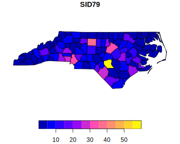
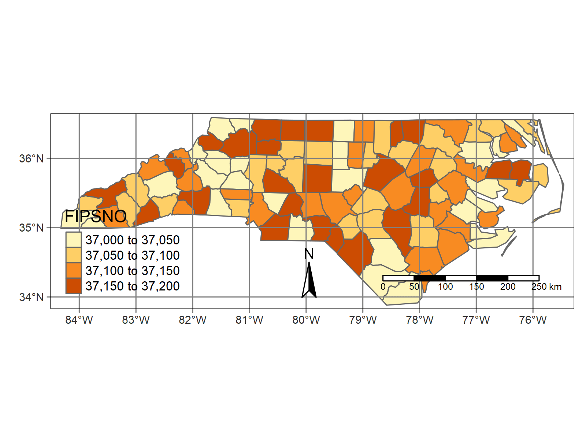

layout: true .banner[ .shorttitle[ [WebR](https://webr.r-wasm.org/latest/) [Online Code Editor](https://rdrr.io/snippets/) [ГИС аспирантура](break.html#home) ] ] --- class: metadata customtitle middle left name: H32169 <iframe width='220' height='220' class='timenow' src='https://www.timeanddate.com/worldclock/fullscreen.html?n=1440' frameborder='0' allow='encrypted-media' allowfullscreen></iframe> .sidebar.left-column[ ## [Основы R](#H73fe7) ## [R как ГИС?](#rgis) ## [Пространственные данные](#Hbbf15) ## [Дополнительно по R](#H5e0c2) ] .mainbar.right-column[ .author[Никита Платонов] .institute[с.н.с. ИПЭЭ РАН] .title[Возможности R для работы с пространственными данными] .subtitle[ГИС технологии в биологических исследованиях] .what[Занятие 05] .where[] .when[ .updated[Обновлено: 2024-03-07 08:00]] ] --- name: H73fe7 .sidebar.left-column[ ## [Основы R](#H73fe7).fg[] ### [Установка R](#H73fe7).fg[] #### [Как использовать данный материал](#H73fe7).fg[].bg[] #### [Oперационные системы](#Ha9e32) #### [Базовый R](#H1d46d) #### [Библиотеки](#H0bdec) #### [Дополнительное ПО](#Hf7905) ### [Начало работы](#Hc89f5) ### [Представление данных](#H41dd8) ## [R как ГИС?](#rgis) ## [Пространственные данные](#Hbbf15) ## [Дополнительно по R](#H5e0c2) ] .mainbar.right-column[ Предполагается, что во время занятий будет использоваться интерактивный режим: либо простая среда R (R, запущенный без команд), либо графическая среда R GUI, либо RStudio. Блок исходного кода выделен моноширинным шрифтом с подсветкой синтаксиса, после которого либо приведен текстовый вывод (более бледный цвет шрифта), либо графический вывод (рисунок, таблица). В среде R нужно вводить код из верхнего блока и сравнивать полученный вывод с содержимым нижнего блока. К примеру, ниже приведен пример вывода числа `\(\pi\)`: сверху – команда, снизу – выход. ```r pi ``` ``` ## [1] 3.141593 ``` ] --- name: Ha9e32 .sidebar.left-column[ ## [Основы R](#H73fe7).fg[] ### [Установка R](#H73fe7).fg[] #### [Как использовать данный материал](#H73fe7) #### [Oперационные системы](#Ha9e32).fg[].bg[] #### [Базовый R](#H1d46d) #### [Библиотеки](#H0bdec) #### [Дополнительное ПО](#Hf7905) ### [Начало работы](#Hc89f5) ### [Представление данных](#H41dd8) ## [R как ГИС?](#rgis) ## [Пространственные данные](#Hbbf15) ## [Дополнительно по R](#H5e0c2) ] .mainbar.right-column[ Не для всех операционных систем есть скомпилированные модули (ядро R, библиотеки). В таком случае модули компилируются, и на это уходит какое-то время. Поэтому если ОС не OS Windows, то этот этап нужно пройти заранее. ] --- name: H1d46d .sidebar.left-column[ ## [Основы R](#H73fe7).fg[] ### [Установка R](#H73fe7).fg[] #### [Как использовать данный материал](#H73fe7) #### [Oперационные системы](#Ha9e32) #### [Базовый R](#H1d46d).fg[].bg[] #### [Библиотеки](#H0bdec) #### [Дополнительное ПО](#Hf7905) ### [Начало работы](#Hc89f5) ### [Представление данных](#H41dd8) ## [R как ГИС?](#rgis) ## [Пространственные данные](#Hbbf15) ## [Дополнительно по R](#H5e0c2) ] .mainbar.right-column[ Установить или обновить R, например, [отсюда](https://cran.rstudio.org/). По состоянию на 07 марта 2024 г. актуальная версия 4.3.3. Нативные пайпы с версии 4.1. Пакеты не обновляются для старых версий R. При переходе с версии 3.6 на версию 4.0 пришлось переустановить все пакеты (библиотеки, модули). ] --- name: H0bdec .sidebar.left-column[ ## [Основы R](#H73fe7).fg[] ### [Установка R](#H73fe7).fg[] #### [Как использовать данный материал](#H73fe7) #### [Oперационные системы](#Ha9e32) #### [Базовый R](#H1d46d) #### [Библиотеки](#H0bdec) <span class="bullet bullet-active">[•](#H0bdec)</span><span class="bullet mslide10m">[•](#Hc9837)</span>.fg[].bg[] #### [Дополнительное ПО](#Hf7905) ### [Начало работы](#Hc89f5) ### [Представление данных](#H41dd8) ## [R как ГИС?](#rgis) ## [Пространственные данные](#Hbbf15) ## [Дополнительно по R](#H5e0c2) ] .mainbar.right-column[ .scrollable[ ```r pkgList <- c("sf","terra","raster","ggplot2","leaflet","mapview" ,"mapedit","knitr","rmarkdown","gdalUtilities","tmap","ursa") whoisready <- sapply(pkgList,function(pkg) { if (requireNamespace(pkg)) return(TRUE) install.packages(pkg,repos="https://cran.rstudio.com") requireNamespace(pkg) }) ``` ``` ## Loading required namespace: sf ``` ``` ## Loading required namespace: terra ``` ``` ## Loading required namespace: raster ``` ``` ## Loading required namespace: ggplot2 ``` ``` ## Loading required namespace: leaflet ``` ``` ## Loading required namespace: mapview ``` ``` ## Loading required namespace: mapedit ``` ``` ## Loading required namespace: gdalUtilities ``` ``` ## Loading required namespace: tmap ``` ] ] --- name: Hc9837 .sidebar.left-column[ ## [Основы R](#H73fe7).fg[] ### [Установка R](#H73fe7).fg[] #### [Как использовать данный материал](#H73fe7) #### [Oперационные системы](#Ha9e32) #### [Базовый R](#H1d46d) #### [Библиотеки](#H0bdec) <span class="bullet bullet">[•](#H0bdec)</span><span class="bullet bullet-active">[•](#Hc9837)</span>.fg[].bg[] #### [Дополнительное ПО](#Hf7905) ### [Начало работы](#Hc89f5) ### [Представление данных](#H41dd8) ## [R как ГИС?](#rgis) ## [Пространственные данные](#Hbbf15) ## [Дополнительно по R](#H5e0c2) ] .mainbar.right-column[ ```r whoisready ``` ``` ## sf terra raster ggplot2 leaflet ## TRUE TRUE TRUE TRUE TRUE ## mapview mapedit knitr rmarkdown gdalUtilities ## TRUE TRUE TRUE TRUE TRUE ## tmap ursa ## TRUE TRUE ``` Если отображается `TRUE` для всех библиотек, то подготовка к занятию осуществлена успешно. ```r c('Everything is ready?'=all(whoisready)) ``` ``` ## Everything is ready? ## TRUE ``` Если где-то выскочило `FALSE` (например, для библиотеки "foo"), то можно попробовать его установить заново функцией `install.packages("foo")`. ] --- class: middle center name: Hf7905 .sidebar.left-column[ ## [Основы R](#H73fe7).fg[] ### [Установка R](#H73fe7).fg[] #### [Как использовать данный материал](#H73fe7) #### [Oперационные системы](#Ha9e32) #### [Базовый R](#H1d46d) #### [Библиотеки](#H0bdec) #### [Дополнительное ПО](#Hf7905).fg[] ##### [RStudio IDE](#Hf7905).fg[].bg[] ##### [Pandoc](#pandoc) ##### [Jupyter](#H27afe) ### [Начало работы](#Hc89f5) ### [Представление данных](#H41dd8) ## [R как ГИС?](#rgis) ## [Пространственные данные](#Hbbf15) ## [Дополнительно по R](#H5e0c2) ] .mainbar.right-column[ <sup>факультативно</sup> ] --- name: pandoc .sidebar.left-column[ ## [Основы R](#H73fe7).fg[] ### [Установка R](#H73fe7).fg[] #### [Как использовать данный материал](#H73fe7) #### [Oперационные системы](#Ha9e32) #### [Базовый R](#H1d46d) #### [Библиотеки](#H0bdec) #### [Дополнительное ПО](#Hf7905).fg[] ##### [RStudio IDE](#Hf7905) ##### [Pandoc](#pandoc).fg[].bg[] ##### [Jupyter](#H27afe) ### [Начало работы](#Hc89f5) ### [Представление данных](#H41dd8) ## [R как ГИС?](#rgis) ## [Пространственные данные](#Hbbf15) ## [Дополнительно по R](#H5e0c2) ] .mainbar.right-column[ .font90[ Pandoc необходим для создания воспроизводимого результата. Этот шаг опциональный, и может быть пропущен, но в этом случае на занятии будет пропущен раздел по [публикации результатов](#report1). [Ссылка](https://pandoc.org/installing.html) на страницу для скачивания. Для пользователей Windows достаточно перейти к [скачиванию актуального релиза](https://github.com/jgm/pandoc/releases/latest), и выбрать либо установщик (`*.msi`), либо архив (`*.zip`). Запомнить путь, куда произведена установка и где находится файл `pandoc.exe` и добавить этот путь в переменную окружения `%PATH%`, например: WindowsKey+Q, ввести "Переменные среды/Environment Variables", попасть в окошко "Свойства Системы/System Properties", нажать на кнопку "Переменные среды/Environment Variables" и отредактировать пользовательскую или системную переменную PATH, добавив путь к `pandoc.exe`. Чтобы проверить правильно ли установлен Pandoc, в новой R-сессии: ```r rmarkdown::pandoc_available() ``` ``` ## [1] TRUE ``` ] ] --- name: H27afe .sidebar.left-column[ ## [Основы R](#H73fe7).fg[] ### [Установка R](#H73fe7).fg[] #### [Как использовать данный материал](#H73fe7) #### [Oперационные системы](#Ha9e32) #### [Базовый R](#H1d46d) #### [Библиотеки](#H0bdec) #### [Дополнительное ПО](#Hf7905).fg[] ##### [RStudio IDE](#Hf7905) ##### [Pandoc](#pandoc) ##### [Jupyter](#H27afe).fg[].bg[] ### [Начало работы](#Hc89f5) ### [Представление данных](#H41dd8) ## [R как ГИС?](#rgis) ## [Пространственные данные](#Hbbf15) ## [Дополнительно по R](#H5e0c2) ] .mainbar.right-column[ Jupyter Notebook для работы с R кодом в браузере. 1. [Загрузить](https://docs.conda.io/en/latest/miniconda.html) и установить менеджер Miniconda (проверено на Windows 64bit Python 3.7). 2. Запустить `conda` (На Windows попробовать WinKey+Q и начать вводить "Anaconda") 3. Последовательно выполнить команды (в среде Conda, не в среде R): Команда | Описание ---|--- `conda install jupyter` | установка Jupyter Notebook `conda install -c r r-recommended r-irkernel` | Установка R, базовых библиотек и библиотеки для использования R в Jupyter Notebook `conda install -c conda-forge jupytext` | Установка преобразователя кода R в формат Jupyter Notebook ] --- name: Hc89f5 .sidebar.left-column[ ## [Основы R](#H73fe7).fg[] ### [Установка R](#H73fe7) ### [Начало работы](#Hc89f5) <span class="bullet bullet-active">[•](#Hc89f5)</span><span class="bullet mslide16m">[•](#H20e0d)</span>.fg[].bg[] ### [Представление данных](#H41dd8) ## [R как ГИС?](#rgis) ## [Пространственные данные](#Hbbf15) ## [Дополнительно по R](#H5e0c2) ] .mainbar.right-column[ Текущий путь, где мы находимся. Здесь появятся файлы, созданные в процессе занятия. ```r getwd() ``` ``` ## [1] "C:/platt/education/202204-GIS" ``` Его можно поменять через меню RGui/RStudio или с помощью `setwd()`. Зафиксируем генератор псевдослучайных чисел на определенную последовательность ```r set.seed(353) sample(10) ``` ``` ## [1] 2 7 10 6 4 1 3 9 5 8 ``` ] --- name: H20e0d .sidebar.left-column[ ## [Основы R](#H73fe7).fg[] ### [Установка R](#H73fe7) ### [Начало работы](#Hc89f5) <span class="bullet bullet">[•](#Hc89f5)</span><span class="bullet bullet-active">[•](#H20e0d)</span>.fg[].bg[] ### [Представление данных](#H41dd8) ## [R как ГИС?](#rgis) ## [Пространственные данные](#Hbbf15) ## [Дополнительно по R](#H5e0c2) ] .mainbar.right-column[ .font90[ Команда для проверки кириллицы: ```r print(c('Здесь кириллица?'="Да!"),quote=FALSE) ``` ``` ## Здесь кириллица? ## Да! ``` Если вывод не читаемый, то возможные пути решения: 1\. Задать кириллицу для символьной локали: ```r if (.Platform$OS.type=="windows") Sys.setlocale("LC_CTYPE","Russian") ``` ``` ## Warning in Sys.setlocale("LC_CTYPE", "Russian"): using locale code page other ## than 65001 ("UTF-8") may cause problems ``` ```r Sys.setlocale("LC_CTYPE","Russian.UTF-8") ``` 2\. Если скрипты подключаются через `source()`, то можно настроить запуск R через конфигурационные файлы. Например, скачать [.Rprofile](./.Rprofile), разместить в рабочей директории, перегрузить R. Файл имеет следующую структуру: local({ options(encoding="UTF-8") Sys.setlocale("LC_CTYPE","Russian") }) 3\. Если скрипт `bar.R` с кириллицей в кодировке UTF-8 запускается из командной строки, то использовать следующие параметры запуска. R --encoding UTF-8 -f bar.R ] ] --- name: H41dd8 .sidebar.left-column[ ## [Основы R](#H73fe7).fg[] ### [Установка R](#H73fe7) ### [Начало работы](#Hc89f5) ### [Представление данных](#H41dd8).fg[] #### [Простые типы](#H41dd8).fg[] ##### [Числа и имена значений](#H41dd8).fg[].bg[] ##### [Целые числа, числа с плавающей точкой](#H6ec3b) ##### [Логические значения, строки](#H5d31d) #### [Составные типы](#Hef704) #### [Матрицы](#H6db2b) #### [Массивы](#H0cf19) #### [Факторы](#H31d77) #### [Индексация](#indices) ## [R как ГИС?](#rgis) ## [Пространственные данные](#Hbbf15) ## [Дополнительно по R](#H5e0c2) ] .mainbar.right-column[ ```r (a1 <- seq(7)) ``` ``` ## [1] 1 2 3 4 5 6 7 ``` ```r str(a1) ``` ``` ## int [1:7] 1 2 3 4 5 6 7 ``` ```r a2 <- a1 names(a2) <- format(Sys.Date()+a1-1,"%A") a2 ``` ``` ## Thursday Friday Saturday Sunday Monday Tuesday Wednesday ## 1 2 3 4 5 6 7 ``` ```r str(a2) ``` ``` ## Named int [1:7] 1 2 3 4 5 6 7 ## - attr(*, "names")= chr [1:7] "Thursday" "Friday" "Saturday" "Sunday" ... ``` ] --- name: H6ec3b .sidebar.left-column[ ## [Основы R](#H73fe7).fg[] ### [Установка R](#H73fe7) ### [Начало работы](#Hc89f5) ### [Представление данных](#H41dd8).fg[] #### [Простые типы](#H41dd8).fg[] ##### [Числа и имена значений](#H41dd8) ##### [Целые числа, числа с плавающей точкой](#H6ec3b).fg[].bg[] ##### [Логические значения, строки](#H5d31d) #### [Составные типы](#Hef704) #### [Матрицы](#H6db2b) #### [Массивы](#H0cf19) #### [Факторы](#H31d77) #### [Индексация](#indices) ## [R как ГИС?](#rgis) ## [Пространственные данные](#Hbbf15) ## [Дополнительно по R](#H5e0c2) ] .mainbar.right-column[ ```r str(a2+0L) ``` ``` ## Named int [1:7] 1 2 3 4 5 6 7 ## - attr(*, "names")= chr [1:7] "Thursday" "Friday" "Saturday" "Sunday" ... ``` ```r str(a2+0) ``` ``` ## Named num [1:7] 1 2 3 4 5 6 7 ## - attr(*, "names")= chr [1:7] "Thursday" "Friday" "Saturday" "Sunday" ... ``` ```r typeof(a2+0L) ``` ``` ## [1] "integer" ``` ```r typeof(a2+0) ``` ``` ## [1] "double" ``` ] --- name: H5d31d .sidebar.left-column[ ## [Основы R](#H73fe7).fg[] ### [Установка R](#H73fe7) ### [Начало работы](#Hc89f5) ### [Представление данных](#H41dd8).fg[] #### [Простые типы](#H41dd8).fg[] ##### [Числа и имена значений](#H41dd8) ##### [Целые числа, числа с плавающей точкой](#H6ec3b) ##### [Логические значения, строки](#H5d31d).fg[].bg[] #### [Составные типы](#Hef704) #### [Матрицы](#H6db2b) #### [Массивы](#H0cf19) #### [Факторы](#H31d77) #### [Индексация](#indices) ## [R как ГИС?](#rgis) ## [Пространственные данные](#Hbbf15) ## [Дополнительно по R](#H5e0c2) ] .mainbar.right-column[ ##### Логические значения ```r (a3 <- sample(c(TRUE,FALSE),length(a2),replace=TRUE)) ``` ``` ## [1] FALSE FALSE TRUE FALSE FALSE TRUE TRUE ``` ```r class(a3) ``` ``` ## [1] "logical" ``` ```r str(a3) ``` ``` ## logi [1:7] FALSE FALSE TRUE FALSE FALSE TRUE ... ``` ##### Строки ```r (a4 <- names(a2)) ``` ``` ## [1] "Thursday" "Friday" "Saturday" "Sunday" "Monday" "Tuesday" ## [7] "Wednesday" ``` ```r class(a4) ``` ``` ## [1] "character" ``` ```r str(a4) ``` ``` ## chr [1:7] "Thursday" "Friday" "Saturday" "Sunday" "Monday" "Tuesday" ... ``` ] --- name: Hef704 .sidebar.left-column[ ## [Основы R](#H73fe7).fg[] ### [Установка R](#H73fe7) ### [Начало работы](#Hc89f5) ### [Представление данных](#H41dd8).fg[] #### [Простые типы](#H41dd8) #### [Составные типы](#Hef704).fg[] ##### [Списки одинаковой длины](#Hef704).fg[].bg[] ##### [Таблицы](#dataframe) ##### [Списки различной длины](#H20aa7) #### [Матрицы](#H6db2b) #### [Массивы](#H0cf19) #### [Факторы](#H31d77) #### [Индексация](#indices) ## [R как ГИС?](#rgis) ## [Пространственные данные](#Hbbf15) ## [Дополнительно по R](#H5e0c2) ] .mainbar.right-column[ ```r (a5 <- list(num=a1[c(1,3:7)],char=a4[-2])) ``` ``` ## $num ## [1] 1 3 4 5 6 7 ## ## $char ## [1] "Thursday" "Saturday" "Sunday" "Monday" "Tuesday" "Wednesday" ``` ```r str(a5) ``` ``` ## List of 2 ## $ num : int [1:6] 1 3 4 5 6 7 ## $ char: chr [1:6] "Thursday" "Saturday" "Sunday" "Monday" ... ``` ```r class(a5) ``` ``` ## [1] "list" ``` ```r length(a5) ``` ``` ## [1] 2 ``` ```r sapply(a5,length) ``` ``` ## num char ## 6 6 ``` ] --- name: dataframe .sidebar.left-column[ ## [Основы R](#H73fe7).fg[] ### [Установка R](#H73fe7) ### [Начало работы](#Hc89f5) ### [Представление данных](#H41dd8).fg[] #### [Простые типы](#H41dd8) #### [Составные типы](#Hef704).fg[] ##### [Списки одинаковой длины](#Hef704) ##### [Таблицы](#dataframe).fg[].bg[] ##### [Списки различной длины](#H20aa7) #### [Матрицы](#H6db2b) #### [Массивы](#H0cf19) #### [Факторы](#H31d77) #### [Индексация](#indices) ## [R как ГИС?](#rgis) ## [Пространственные данные](#Hbbf15) ## [Дополнительно по R](#H5e0c2) ] .mainbar.right-column[ ```r (a6 <- data.frame(num=a1[c(1,3:7)],char=a4[-2])) ``` ``` ## num char ## 1 1 Thursday ## 2 3 Saturday ## 3 4 Sunday ## 4 5 Monday ## 5 6 Tuesday ## 6 7 Wednesday ``` ```r str(a6) ``` ``` ## 'data.frame': 6 obs. of 2 variables: ## $ num : int 1 3 4 5 6 7 ## $ char: chr "Thursday" "Saturday" "Sunday" "Monday" ... ``` ```r class(a6) ``` ``` ## [1] "data.frame" ``` ```r dim(a6) ``` ``` ## [1] 6 2 ``` См. [индексацию](#indices). ] --- name: H20aa7 .sidebar.left-column[ ## [Основы R](#H73fe7).fg[] ### [Установка R](#H73fe7) ### [Начало работы](#Hc89f5) ### [Представление данных](#H41dd8).fg[] #### [Простые типы](#H41dd8) #### [Составные типы](#Hef704).fg[] ##### [Списки одинаковой длины](#Hef704) ##### [Таблицы](#dataframe) ##### [Списки различной длины](#H20aa7).fg[].bg[] #### [Матрицы](#H6db2b) #### [Массивы](#H0cf19) #### [Факторы](#H31d77) #### [Индексация](#indices) ## [R как ГИС?](#rgis) ## [Пространственные данные](#Hbbf15) ## [Дополнительно по R](#H5e0c2) ] .mainbar.right-column[ ```r (a7 <- list(x=sample(a1,3),y=sample(a1,5))) ``` ``` ## $x ## [1] 7 2 3 ## ## $y ## [1] 7 3 2 4 6 ``` ```r str(a7) ``` ``` ## List of 2 ## $ x: int [1:3] 7 2 3 ## $ y: int [1:5] 7 3 2 4 6 ``` ```r class(a7) ``` ``` ## [1] "list" ``` ```r length(a7) ``` ``` ## [1] 2 ``` ```r sapply(a7,length) ``` ``` ## x y ## 3 5 ``` ] --- name: H6db2b .sidebar.left-column[ ## [Основы R](#H73fe7).fg[] ### [Установка R](#H73fe7) ### [Начало работы](#Hc89f5) ### [Представление данных](#H41dd8).fg[] #### [Простые типы](#H41dd8) #### [Составные типы](#Hef704) #### [Матрицы](#H6db2b).fg[].bg[] #### [Массивы](#H0cf19) #### [Факторы](#H31d77) #### [Индексация](#indices) ## [R как ГИС?](#rgis) ## [Пространственные данные](#Hbbf15) ## [Дополнительно по R](#H5e0c2) ] .mainbar.right-column[ ```r (a11 <- matrix(sample(seq(24)),ncol=4,nrow=3)) ``` ``` ## Warning in matrix(sample(seq(24)), ncol = 4, nrow = 3): data length differs ## from size of matrix: [24 != 3 x 4] ``` ``` ## [,1] [,2] [,3] [,4] ## [1,] 20 24 6 17 ## [2,] 8 23 2 13 ## [3,] 22 1 21 10 ``` Размерность массива ```r dim(a11) ``` ``` ## [1] 3 4 ``` Структура данных массива ```r str(a11) ``` ``` ## int [1:3, 1:4] 20 8 22 24 23 1 6 2 21 17 ... ``` ] --- name: H0cf19 .sidebar.left-column[ ## [Основы R](#H73fe7).fg[] ### [Установка R](#H73fe7) ### [Начало работы](#Hc89f5) ### [Представление данных](#H41dd8).fg[] #### [Простые типы](#H41dd8) #### [Составные типы](#Hef704) #### [Матрицы](#H6db2b) #### [Массивы](#H0cf19).fg[].bg[] #### [Факторы](#H31d77) #### [Индексация](#indices) ## [R как ГИС?](#rgis) ## [Пространственные данные](#Hbbf15) ## [Дополнительно по R](#H5e0c2) ] .mainbar.right-column[ ```r (a8 <- array(sample(24),dim=c(3,4,2))) ``` ``` ## , , 1 ## ## [,1] [,2] [,3] [,4] ## [1,] 10 4 2 17 ## [2,] 9 5 16 19 ## [3,] 14 15 18 22 ## ## , , 2 ## ## [,1] [,2] [,3] [,4] ## [1,] 20 23 7 21 ## [2,] 11 6 13 12 ## [3,] 3 8 24 1 ``` ```r str(a8) ``` ``` ## int [1:3, 1:4, 1:2] 10 9 14 4 5 15 2 16 18 17 ... ``` ```r class(a8) ``` ``` ## [1] "array" ``` ] --- name: H31d77 .sidebar.left-column[ ## [Основы R](#H73fe7).fg[] ### [Установка R](#H73fe7) ### [Начало работы](#Hc89f5) ### [Представление данных](#H41dd8).fg[] #### [Простые типы](#H41dd8) #### [Составные типы](#Hef704) #### [Матрицы](#H6db2b) #### [Массивы](#H0cf19) #### [Факторы](#H31d77).fg[].bg[] #### [Индексация](#indices) ## [R как ГИС?](#rgis) ## [Пространственные данные](#Hbbf15) ## [Дополнительно по R](#H5e0c2) ] .mainbar.right-column[ ```r (a9 <- factor(sample(a4),levels=a4)) ``` ``` ## [1] Friday Thursday Saturday Monday Sunday Wednesday Tuesday ## Levels: Thursday Friday Saturday Sunday Monday Tuesday Wednesday ``` ```r str(a9) ``` ``` ## Factor w/ 7 levels "Thursday","Friday",..: 2 1 3 5 4 7 6 ``` ```r class(a9) ``` ``` ## [1] "factor" ``` ```r (a10 <- factor(sample(a4),levels=a4,ordered=TRUE)) ``` ``` ## [1] Sunday Monday Wednesday Thursday Saturday Tuesday Friday ## 7 Levels: Thursday < Friday < Saturday < Sunday < Monday < ... < Wednesday ``` ```r str(a10) ``` ``` ## Ord.factor w/ 7 levels "Thursday"<"Friday"<..: 4 5 7 1 3 6 2 ``` ```r class(a10) ``` ``` ## [1] "ordered" "factor" ``` ] --- name: indices .sidebar.left-column[ ## [Основы R](#H73fe7).fg[] ### [Установка R](#H73fe7) ### [Начало работы](#Hc89f5) ### [Представление данных](#H41dd8).fg[] #### [Простые типы](#H41dd8) #### [Составные типы](#Hef704) #### [Матрицы](#H6db2b) #### [Массивы](#H0cf19) #### [Факторы](#H31d77) #### [Индексация](#indices).fg[].bg[] ## [R как ГИС?](#rgis) ## [Пространственные данные](#Hbbf15) ## [Дополнительно по R](#H5e0c2) ] .mainbar.right-column[ .double[ На примере [`data.frame`](#dataframe) (таблицы атрибутов пространственных данных) ```r a6 ``` ``` ## num char ## 1 1 Thursday ## 2 3 Saturday ## 3 4 Sunday ## 4 5 Monday ## 5 6 Tuesday ## 6 7 Wednesday ``` Выбрать отдельные строки ```r a6[5:6,] ``` ``` ## num char ## 5 6 Tuesday ## 6 7 Wednesday ``` Выбрать отдельные столбцы ```r a6[,2] ``` ``` ## [1] "Thursday" "Saturday" "Sunday" "Monday" "Tuesday" "Wednesday" ``` ```r a6[[2]] ``` ``` ## [1] "Thursday" "Saturday" "Sunday" "Monday" "Tuesday" "Wednesday" ``` Использовать фунцию `subset()` ```r subset(a6,char %in% c("Hrus Hrus","Monday","Tuesday","Wednesday")) ``` ``` ## num char ## 4 5 Monday ## 5 6 Tuesday ## 6 7 Wednesday ``` ] ] --- name: rgis .sidebar.left-column[ ## [Основы R](#H73fe7) ## [R как ГИС?](#rgis).fg[].bg[] ### [Средства визуализации](#Hb85a3) ### [Пространственные данные](#H21522) ### [По форматам](#H0cf1a) ## [Пространственные данные](#Hbbf15) ## [Дополнительно по R](#H5e0c2) ] .mainbar.right-column[ + R устроен так, что можно реализовать сложные структуры данных, со средствами их инспектирования, что вполне применимо для пространственных данных и их метаданных + В R есть инструменты для анализа данных + В R есть инструменты для визуализации + *Как особенность развития до текущего момента*: воспроизводимость реализована лучше интерактивности + В R уже многое сделано по манипуляции с пространственными данными: пользователю не обязательно быть разработчиком ] --- name: Hb85a3 .sidebar.left-column[ ## [Основы R](#H73fe7) ## [R как ГИС?](#rgis).fg[] ### [Средства визуализации](#Hb85a3).fg[].bg[] #### [Пример путешествия мимо/через Спб](#H1c3da) #### [`data(volcano)`](#H51d5b) ### [Пространственные данные](#H21522) ### [По форматам](#H0cf1a) ## [Пространственные данные](#Hbbf15) ## [Дополнительно по R](#H5e0c2) ] .mainbar.right-column[ Базовые средства R для визуализации (библиотека `graphics`) пространственных данных: + `points()` – отображение точек (геометрия POINT) + `lines()`, `segments()`, `contour()` – отображение линий (геометрия LINESTRING) + `polygon()`, `polypath()` – отображение полигонов (геометрия POLYGON) + `image()`, `rasterImage()` – растровые изображения + `text()`, `legend()` – аннотациии + `axis()`, `mtext()` – рамочное оформление ] --- name: H1c3da .sidebar.left-column[ ## [Основы R](#H73fe7) ## [R как ГИС?](#rgis).fg[] ### [Средства визуализации](#Hb85a3).fg[] #### [Пример путешествия мимо/через Спб](#H1c3da) <span class="bullet bullet-active">[•](#H1c3da)</span><span class="bullet mslide36m">[•](#H12d6b)</span><span class="bullet mslide37m">[•](#H65d18)</span>.fg[].bg[] #### [`data(volcano)`](#H51d5b) ### [Пространственные данные](#H21522) ### [По форматам](#H0cf1a) ## [Пространственные данные](#Hbbf15) ## [Дополнительно по R](#H5e0c2) ] .mainbar.right-column[ ```r n <- 60 seqx <- seq(20,40,by=5) seqy <- seq(55,65,by=2) x <- sort(runif(n,min=min(seqx),max=max(seqx))) y <- sort(runif(n,min=min(seqy),max=max(seqy))) ``` ] --- name: H12d6b .sidebar.left-column[ ## [Основы R](#H73fe7) ## [R как ГИС?](#rgis).fg[] ### [Средства визуализации](#Hb85a3).fg[] #### [Пример путешествия мимо/через Спб](#H1c3da) <span class="bullet bullet">[•](#H1c3da)</span><span class="bullet bullet-active">[•](#H12d6b)</span><span class="bullet mslide37m">[•](#H65d18)</span>.fg[].bg[] #### [`data(volcano)`](#H51d5b) ### [Пространственные данные](#H21522) ### [По форматам](#H0cf1a) ## [Пространственные данные](#Hbbf15) ## [Дополнительно по R](#H5e0c2) ] .mainbar.right-column[ ```r plot(x,y,type="n",asp=NA,axes=FALSE,xlab="",ylab="") lines(x,y,lwd=4,col="black") lines(x,y,lwd=3,col="orange") box() axis(1,at=seqx,lab=paste0(seqx,"°E"),lwd=0,lwd.ticks=1,las=1) axis(2,at=seqy,lab=paste0(seqy,"°N"),lwd=0,lwd.ticks=1,las=1) ``` <img src="assets/lesson05/spb1-1.svg" width="600px" height="450px" style="display: block; margin: auto;" /> ] --- name: H65d18 .sidebar.left-column[ ## [Основы R](#H73fe7) ## [R как ГИС?](#rgis).fg[] ### [Средства визуализации](#Hb85a3).fg[] #### [Пример путешествия мимо/через Спб](#H1c3da) <span class="bullet bullet">[•](#H1c3da)</span><span class="bullet bullet">[•](#H12d6b)</span><span class="bullet bullet-active">[•](#H65d18)</span>.fg[].bg[] #### [`data(volcano)`](#H51d5b) ### [Пространственные данные](#H21522) ### [По форматам](#H0cf1a) ## [Пространственные данные](#Hbbf15) ## [Дополнительно по R](#H5e0c2) ] .mainbar.right-column[ ```r e <- sf::st_sfc(sf::st_linestring(cbind(x,y)),crs=4326) ursa::session_grid(NULL) ursa::glance(e,blank="white",coast.fill="#00000010",pointsize=12 ,col="black",plot.lwd=5) ``` <img src="assets/lesson05//ursa01_spb2.png" width="1330" height="500" style="display: block; margin: auto;" /> ] --- name: H51d5b .sidebar.left-column[ ## [Основы R](#H73fe7) ## [R как ГИС?](#rgis).fg[] ### [Средства визуализации](#Hb85a3).fg[] #### [Пример путешествия мимо/через Спб](#H1c3da) #### [`data(volcano)`](#H51d5b) <span class="bullet bullet-active">[•](#H51d5b)</span><span class="bullet mslide40m">[•](#Hb4f48)</span>.fg[].bg[] ### [Пространственные данные](#H21522) ### [По форматам](#H0cf1a) ## [Пространственные данные](#Hbbf15) ## [Дополнительно по R](#H5e0c2) ] .mainbar.right-column[ ```r image(volcano) ``` <img src="assets/lesson05/imgvolcano-1.svg" width="1330" height="568" style="display: block; margin: auto;" /> ] --- name: Hb4f48 .sidebar.left-column[ ## [Основы R](#H73fe7) ## [R как ГИС?](#rgis).fg[] ### [Средства визуализации](#Hb85a3).fg[] #### [Пример путешествия мимо/через Спб](#H1c3da) #### [`data(volcano)`](#H51d5b) <span class="bullet bullet">[•](#H51d5b)</span><span class="bullet bullet-active">[•](#Hb4f48)</span>.fg[].bg[] ### [Пространственные данные](#H21522) ### [По форматам](#H0cf1a) ## [Пространственные данные](#Hbbf15) ## [Дополнительно по R](#H5e0c2) ] .mainbar.right-column[ Это вулкан Maunga Whau (Mt Eden). ```r ursa:::spatialize("Mount Eden",place="park",style="web") |> ursa::glance(basemap.alpha=1,style="opentopomap") ``` <img src="assets/lesson05//ursa03_glancevolcano.png" width="1330" height="550" style="display: block; margin: auto;" /> ] --- name: H21522 .sidebar.left-column[ ## [Основы R](#H73fe7) ## [R как ГИС?](#rgis).fg[] ### [Средства визуализации](#Hb85a3) ### [Пространственные данные](#H21522).fg[] #### [Векторы](#H21522).fg[].bg[] #### [Растры](#He80bc) #### [Визуализация](#H34307) ### [По форматам](#H0cf1a) ## [Пространственные данные](#Hbbf15) ## [Дополнительно по R](#H5e0c2) ] .mainbar.right-column[ Библиотека | Формат | Импорт | Экспорт -----|------|-----|--- [`sp`](https://edzer.github.io/sp/) | [GDAL vector drivers](https://gdal.org/drivers/vector/index.html) | `sf::st_read() ǀ> sf::as_Spatial()` <sup>1</sup> | `sf::st_as_sf() ǀ> sf::st_write` <sup>2</sup> [`sf`](https://r-spatial.github.io/sf/) | [GDAL vector drivers](https://gdal.org/drivers/vector/index.html) | `st_read()` | `st_write()` [`gdalUtilities`](https://cran.rstudio.com/web/packages/gdalUtilities/) <sup>*факультативно*<sup> | [GDAL vector drivers](https://gdal.org/drivers/vector/index.html) | | оболочка системного GDAL <sup>1</sup>: `ursa::spatial_read(fname,engine="sp")` <br> **`rgdal`**`::readOGR()` <sup>2</sup>: `ursa::spatial_write(obj,fname)` <br> **`rgdal`**`::writeOGR()` ] --- name: He80bc .sidebar.left-column[ ## [Основы R](#H73fe7) ## [R как ГИС?](#rgis).fg[] ### [Средства визуализации](#Hb85a3) ### [Пространственные данные](#H21522).fg[] #### [Векторы](#H21522) #### [Растры](#He80bc).fg[].bg[] #### [Визуализация](#H34307) ### [По форматам](#H0cf1a) ## [Пространственные данные](#Hbbf15) ## [Дополнительно по R](#H5e0c2) ] .mainbar.right-column[ .font95[ Библиотека | Формат | Импорт | Экспорт ---|----|--------|---- [`sp`](https://cran.rstudio.com/web/packages/sp/) | [GDAL raster drivers](https://gdal.org/drivers/raster/index.html) | `raster::raster() ǀ> as("SpatialGridDataFrame")` <sup>1</sup> | `ursa::as_ursa(b) ǀ> ursa::as.Raster() ǀ> raster::writeRaster()` <sup>2</sup> [`raster`](https://cran.rstudio.com/web/packages/raster/) | [RRASTER – R Raster](https://gdal.org/drivers/raster/rraster.html), [GDAL raster drivers](https://gdal.org/drivers/raster/index.html) | `raster()`, `brick()`, `stack()` | `writeRaster()` [`terra`](https://cran.rstudio.com/web/packages/terra/) | [GDAL raster drivers](https://gdal.org/drivers/raster/index.html) | `rast()` | `writeRaster()` [`stars`](https://cran.rstudio.com/web/packages/stars/) | [GDAL raster drivers](https://gdal.org/drivers/raster/index.html) | `read_stars()` | `write_stars()` [`ncdf4`](https://cran.rstudio.com/web/packages/ncdf4/) | [NetCDF](https://gdal.org/drivers/raster/netcdf.html) | `nc_open()` | `nc_create()` [`ursa`](https://cran.rstudio.com/web/packages/ursa/) | [ENVI - ENVI .hdr Labelled Raster](https://gdal.org/drivers/raster/envi.html) | `read_envi()` | `write_envi()` <sup>1</sup>: **`rgdal`**`::readGDAL()` <sup>2</sup>: **`rgdal`**`::writeGDAL()` ] ] --- name: H34307 .sidebar.left-column[ ## [Основы R](#H73fe7) ## [R как ГИС?](#rgis).fg[] ### [Средства визуализации](#Hb85a3) ### [Пространственные данные](#H21522).fg[] #### [Векторы](#H21522) #### [Растры](#He80bc) #### [Визуализация](#H34307).fg[].bg[] ### [По форматам](#H0cf1a) ## [Пространственные данные](#Hbbf15) ## [Дополнительно по R](#H5e0c2) ] .mainbar.right-column[ Статическая, экспортируемая в обычные форматы изображений. PNG, JPG поддерживают DPI. + `ggplot2` и надстройки (префикс `gg*`) + `ursa` Интерактивная, отображаемая в браузере + `leaflet` + `mapview` + `tmap` ] --- name: H0cf1a .sidebar.left-column[ ## [Основы R](#H73fe7) ## [R как ГИС?](#rgis).fg[] ### [Средства визуализации](#Hb85a3) ### [Пространственные данные](#H21522) ### [По форматам](#H0cf1a).fg[] #### [Растры](#H0cf1a).fg[].bg[] #### [Векторы](#H0ad8f) #### [<code>sf</code> или <code>sp</code>?](#Hdf7d1) ## [Пространственные данные](#Hbbf15) ## [Дополнительно по R](#H5e0c2) ] .mainbar.right-column[ + Для хранения многослойные растров используется BSQ/BIL/BIP чередование слоев/строк/пикелей. Самый неэффективный - это BIP. При пространственно-временном анализе можно выбрать BIL, для большинства случаев - BSQ. + Целочисленный GeoTIFF быстро пишется и читается при использовании функций из библиотеки `rgdal` + [GeoTIFF](https://gdal.org/drivers/raster/gtiff.html) часто используется при обмене данными. ] --- name: H0ad8f .sidebar.left-column[ ## [Основы R](#H73fe7) ## [R как ГИС?](#rgis).fg[] ### [Средства визуализации](#Hb85a3) ### [Пространственные данные](#H21522) ### [По форматам](#H0cf1a).fg[] #### [Растры](#H0cf1a) #### [Векторы](#H0ad8f).fg[].bg[] #### [<code>sf</code> или <code>sp</code>?](#Hdf7d1) ## [Пространственные данные](#Hbbf15) ## [Дополнительно по R](#H5e0c2) ] .mainbar.right-column[ + Хорошую скорость чтения и записи демонстрирует формат ["SQLite"](https://gdal.org/drivers/vector/sqlite.html) ("SpatiaLite" RDBMS) при использовании библиотеки `sf`. + ["GeoJSON"](https://gdal.org/drivers/vector/geojson.html) не очень быстрый, но можно использовать библиотеку [`geojsonf`](https://cran.rstudio.com/web/packages/geojsonsf/). + При записи использовать опции, предусмотренные для выбранного формата данных + При записи ["ESRI Shapefile"](https://gdal.org/drivers/vector/shapefile.html) обращать внимания на *.prj, так как у QGIS и ESRI-продуктов разные восприятия файлов проекций. + "ESRI Shapefile" преобладающий формат при обмене данными. ] --- name: Hdf7d1 .sidebar.left-column[ ## [Основы R](#H73fe7) ## [R как ГИС?](#rgis).fg[] ### [Средства визуализации](#Hb85a3) ### [Пространственные данные](#H21522) ### [По форматам](#H0cf1a).fg[] #### [Растры](#H0cf1a) #### [Векторы](#H0ad8f) #### [<code>sf</code> или <code>sp</code>?](#Hdf7d1).fg[].bg[] ## [Пространственные данные](#Hbbf15) ## [Дополнительно по R](#H5e0c2) ] .mainbar.right-column[ + В пользу .large[`sf`] больше аргументов: + удобнее, развивается, поддерживается + в `sf` объекты класса S3, в `sp` объекты класса S4 (строже, но медленнее) + есть `sf::as_Spatial()` (или `as(...,"Spatial")`) для преобразования в объекты `sp`. Обратное преобразование: `sf::st_as_sf()`. + Эффективность с геометрией POINT выше у `sp` из-за представления атрибутивной таблицы и геометрии в одной таблице. + Ряд библиотек завязаны на формат данных `sp`, например [`adehabitatHR`](https://cran.rstudio.com/web/packages/adehabitatHR/), [`dismo`](https://cran.rstudio.com/web/packages/dismo/), [`sdm`](https://cran.rstudio.com/web/packages/sdm/). ] --- class: middle name: Hbbf15 .sidebar.left-column[ ## [Основы R](#H73fe7) ## [R как ГИС?](#rgis) ## [Пространственные данные](#Hbbf15).fg[] ### [Импорт](#Hbbf15).fg[].bg[] #### [Источники для примера](#H26b32) #### [Векторные данные](#H2647a) #### [Растровые данные](#H8837d) ### [Характеристики](#H474e7) ### [Создание](#Hf2931) ### [Визуализация](#H8bbc1) ### [Экспорт](#H75675) ### [Рисование](#H75e7d) ## [Дополнительно по R](#H5e0c2) ] .mainbar.right-column[ Загрузить пространственные данные из файла ] --- name: H26b32 .sidebar.left-column[ ## [Основы R](#H73fe7) ## [R как ГИС?](#rgis) ## [Пространственные данные](#Hbbf15).fg[] ### [Импорт](#Hbbf15).fg[] #### [Источники для примера](#H26b32) <span class="bullet bullet-active">[•](#H26b32)</span><span class="bullet mslide54m">[•](#Haa827)</span><span class="bullet mslide55m">[•](#Hdd854)</span><span class="bullet mslide56m">[•](#H448c1)</span>.fg[].bg[] #### [Векторные данные](#H2647a) #### [Растровые данные](#H8837d) ### [Характеристики](#H474e7) ### [Создание](#Hf2931) ### [Визуализация](#H8bbc1) ### [Экспорт](#H75675) ### [Рисование](#H75e7d) ## [Дополнительно по R](#H5e0c2) ] .mainbar.right-column[ ```r (shpname <- system.file("shape","nc.shp",package="sf")) ``` ``` ## [1] "C:/Software/Rlibs43/sf/shape/nc.shp" ``` ```r file.exists(shpname) ``` ``` ## [1] TRUE ``` ```r (tifname <- system.file("extdata/tahoe.tif",package="gdalUtilities")) ``` ``` ## [1] "C:/Software/Rlibs43/gdalUtilities/extdata/tahoe.tif" ``` ```r file.exists(tifname) ``` ``` ## [1] TRUE ``` ] --- name: Haa827 .sidebar.left-column[ ## [Основы R](#H73fe7) ## [R как ГИС?](#rgis) ## [Пространственные данные](#Hbbf15).fg[] ### [Импорт](#Hbbf15).fg[] #### [Источники для примера](#H26b32) <span class="bullet bullet">[•](#H26b32)</span><span class="bullet bullet-active">[•](#Haa827)</span><span class="bullet mslide55m">[•](#Hdd854)</span><span class="bullet mslide56m">[•](#H448c1)</span>.fg[].bg[] #### [Векторные данные](#H2647a) #### [Растровые данные](#H8837d) ### [Характеристики](#H474e7) ### [Создание](#Hf2931) ### [Визуализация](#H8bbc1) ### [Экспорт](#H75675) ### [Рисование](#H75e7d) ## [Дополнительно по R](#H5e0c2) ] .mainbar.right-column[ ```r ursa::session_grid(NULL) ursa::glance(shpname,coast=FALSE,field="(NAME|SID79)",blank="white" ,legend=list(list(1,"left"),list(2,"left")),dpi=88) ``` <img src="assets/lesson05//ursa05_scotBNG.png" width="1330" height="566" bound style="display: block; margin: auto;" /> ] --- name: Hdd854 .sidebar.left-column[ ## [Основы R](#H73fe7) ## [R как ГИС?](#rgis) ## [Пространственные данные](#Hbbf15).fg[] ### [Импорт](#Hbbf15).fg[] #### [Источники для примера](#H26b32) <span class="bullet bullet">[•](#H26b32)</span><span class="bullet bullet">[•](#Haa827)</span><span class="bullet bullet-active">[•](#Hdd854)</span><span class="bullet mslide56m">[•](#H448c1)</span>.fg[].bg[] #### [Векторные данные](#H2647a) #### [Растровые данные](#H8837d) ### [Характеристики](#H474e7) ### [Создание](#Hf2931) ### [Визуализация](#H8bbc1) ### [Экспорт](#H75675) ### [Рисование](#H75e7d) ## [Дополнительно по R](#H5e0c2) ] .mainbar.right-column[ ```r ursa::session_grid(NULL) ursa::glance(tifname,dpi=96) ``` <img src="assets/lesson05//ursa07_tahoe-rgb.png" width="1330" height="550" bound style="display: block; margin: auto;" /> ] --- name: H448c1 .sidebar.left-column[ ## [Основы R](#H73fe7) ## [R как ГИС?](#rgis) ## [Пространственные данные](#Hbbf15).fg[] ### [Импорт](#Hbbf15).fg[] #### [Источники для примера](#H26b32) <span class="bullet bullet">[•](#H26b32)</span><span class="bullet bullet">[•](#Haa827)</span><span class="bullet bullet">[•](#Hdd854)</span><span class="bullet bullet-active">[•](#H448c1)</span>.fg[].bg[] #### [Векторные данные](#H2647a) #### [Растровые данные](#H8837d) ### [Характеристики](#H474e7) ### [Создание](#Hf2931) ### [Визуализация](#H8bbc1) ### [Экспорт](#H75675) ### [Рисование](#H75e7d) ## [Дополнительно по R](#H5e0c2) ] .mainbar.right-column[ ```r ursa::session_grid(NULL) ursa::display_brick(tifname,dpi=96) ``` <img src="assets/lesson05//ursa09_tahoe-channels.png" width="1330" height="550" bound style="display: block; margin: auto;" /> ] --- name: H2647a .sidebar.left-column[ ## [Основы R](#H73fe7) ## [R как ГИС?](#rgis) ## [Пространственные данные](#Hbbf15).fg[] ### [Импорт](#Hbbf15).fg[] #### [Источники для примера](#H26b32) #### [Векторные данные](#H2647a).fg[] ##### [<code>rgdal/sp</code>](#H2647a) <span class="bullet bullet-active">[•](#H2647a)</span><span class="bullet mslide60m">[•](#H86c2e)</span><span class="bullet mslide61m">[•](#Hf1c5d)</span>.fg[].bg[] ##### [<code>sf</code>](#importExample) #### [Растровые данные](#H8837d) ### [Характеристики](#H474e7) ### [Создание](#Hf2931) ### [Визуализация](#H8bbc1) ### [Экспорт](#H75675) ### [Рисование](#H75e7d) ## [Дополнительно по R](#H5e0c2) ] .mainbar.right-column[ .oversize.h650[ ```r try(rgdal::ogrInfo(shpname)) ## Будет ошибка, если пакета 'rgdal' нет ``` ``` ## Please note that rgdal will be retired during October 2023, ## plan transition to sf/stars/terra functions using GDAL and PROJ ## at your earliest convenience. ## See https://r-spatial.org/r/2023/05/15/evolution4.html and https://github.com/r-spatial/evolution ## rgdal: version: 1.6-7, (SVN revision 1203) ## Geospatial Data Abstraction Library extensions to R successfully loaded ## Loaded GDAL runtime: GDAL 3.6.2, released 2023/01/02 ## Path to GDAL shared files: C:/Software/Rlibs43/rgdal/gdal ## GDAL does not use iconv for recoding strings. ## GDAL binary built with GEOS: TRUE ## Loaded PROJ runtime: Rel. 9.2.0, March 1st, 2023, [PJ_VERSION: 920] ## Path to PROJ shared files: C:/Software/Rlibs43/rgdal/proj ## PROJ CDN enabled: FALSE ## Linking to sp version:1.6-1 ## To mute warnings of possible GDAL/OSR exportToProj4() degradation, ## use options("rgdal_show_exportToProj4_warnings"="none") before loading sp or rgdal. ``` ``` ## Warning: OGR support is provided by the sf and terra packages among others ``` ``` ## Warning: OGR support is provided by the sf and terra packages among others ``` ``` ## Warning: OGR support is provided by the sf and terra packages among others ``` ``` ## Warning: OGR support is provided by the sf and terra packages among others ``` ``` ## Warning: OGR support is provided by the sf and terra packages among others ``` ``` ## Warning: OGR support is provided by the sf and terra packages among others ``` ``` ## Source: "C:\Software\Rlibs43\sf\shape\nc.shp", layer: "nc" ## Driver: ESRI Shapefile; number of rows: 100 ## Feature type: wkbPolygon with 2 dimensions ## Extent: (-84.32385 33.88199) - (-75.45698 36.58965) ## CRS: +proj=longlat +datum=NAD27 +no_defs ## LDID: 87 ## Number of fields: 14 ## name type length typeName ## 1 AREA 2 24 Real ## 2 PERIMETER 2 24 Real ## 3 CNTY_ 2 24 Real ## 4 CNTY_ID 2 24 Real ## 5 NAME 4 80 String ## 6 FIPS 4 80 String ## 7 FIPSNO 2 24 Real ## 8 CRESS_ID 0 9 Integer ## 9 BIR74 2 24 Real ## 10 SID74 2 24 Real ## 11 NWBIR74 2 24 Real ## 12 BIR79 2 24 Real ## 13 SID79 2 24 Real ## 14 NWBIR79 2 24 Real ``` ] ] --- name: H86c2e .sidebar.left-column[ ## [Основы R](#H73fe7) ## [R как ГИС?](#rgis) ## [Пространственные данные](#Hbbf15).fg[] ### [Импорт](#Hbbf15).fg[] #### [Источники для примера](#H26b32) #### [Векторные данные](#H2647a).fg[] ##### [<code>rgdal/sp</code>](#H2647a) <span class="bullet bullet">[•](#H2647a)</span><span class="bullet bullet-active">[•](#H86c2e)</span><span class="bullet mslide61m">[•](#Hf1c5d)</span>.fg[].bg[] ##### [<code>sf</code>](#importExample) #### [Растровые данные](#H8837d) ### [Характеристики](#H474e7) ### [Создание](#Hf2931) ### [Визуализация](#H8bbc1) ### [Экспорт](#H75675) ### [Рисование](#H75e7d) ## [Дополнительно по R](#H5e0c2) ] .mainbar.right-column[ ```r b.sp <- sf::st_read(shpname) |> as("Spatial") ## rgdal::readOGR(shpname) ``` ``` ## Reading layer `nc' from data source `C:\Software\Rlibs43\sf\shape\nc.shp' using driver `ESRI Shapefile' ## Simple feature collection with 100 features and 14 fields ## Geometry type: MULTIPOLYGON ## Dimension: XY ## Bounding box: xmin: -84.32385 ymin: 33.88199 xmax: -75.45698 ymax: 36.58965 ## Geodetic CRS: NAD27 ``` ```r class(b.sp) ``` ``` ## [1] "SpatialPolygonsDataFrame" ## attr(,"package") ## [1] "sp" ``` ```r isS4(b.sp) ``` ``` ## [1] TRUE ``` ```r slotNames(b.sp) ``` ``` ## [1] "data" "polygons" "plotOrder" "bbox" "proj4string" ``` ] --- name: Hf1c5d .sidebar.left-column[ ## [Основы R](#H73fe7) ## [R как ГИС?](#rgis) ## [Пространственные данные](#Hbbf15).fg[] ### [Импорт](#Hbbf15).fg[] #### [Источники для примера](#H26b32) #### [Векторные данные](#H2647a).fg[] ##### [<code>rgdal/sp</code>](#H2647a) <span class="bullet bullet">[•](#H2647a)</span><span class="bullet bullet">[•](#H86c2e)</span><span class="bullet bullet-active">[•](#Hf1c5d)</span>.fg[].bg[] ##### [<code>sf</code>](#importExample) #### [Растровые данные](#H8837d) ### [Характеристики](#H474e7) ### [Создание](#Hf2931) ### [Визуализация](#H8bbc1) ### [Экспорт](#H75675) ### [Рисование](#H75e7d) ## [Дополнительно по R](#H5e0c2) ] .mainbar.right-column[ .oversize[ ```r str(head(b.sp,2)) ``` ``` ## Formal class 'SpatialPolygonsDataFrame' [package "sp"] with 5 slots ## ..@ data :'data.frame': 2 obs. of 14 variables: ## .. ..$ AREA : num [1:2] 0.114 0.061 ## .. ..$ PERIMETER: num [1:2] 1.44 1.23 ## .. ..$ CNTY_ : num [1:2] 1825 1827 ## .. ..$ CNTY_ID : num [1:2] 1825 1827 ## .. ..$ NAME : chr [1:2] "Ashe" "Alleghany" ## .. ..$ FIPS : chr [1:2] "37009" "37005" ## .. ..$ FIPSNO : num [1:2] 37009 37005 ## .. ..$ CRESS_ID : int [1:2] 5 3 ## .. ..$ BIR74 : num [1:2] 1091 487 ## .. ..$ SID74 : num [1:2] 1 0 ## .. ..$ NWBIR74 : num [1:2] 10 10 ## .. ..$ BIR79 : num [1:2] 1364 542 ## .. ..$ SID79 : num [1:2] 0 3 ## .. ..$ NWBIR79 : num [1:2] 19 12 ## ..@ polygons :List of 2 ## .. ..$ :Formal class 'Polygons' [package "sp"] with 5 slots ## .. .. .. ..@ Polygons :List of 1 ## .. .. .. .. ..$ :Formal class 'Polygon' [package "sp"] with 5 slots ## .. .. .. .. .. .. ..@ labpt : num [1:2] -81.5 36.4 ## .. .. .. .. .. .. ..@ area : num 0.114 ## .. .. .. .. .. .. ..@ hole : logi FALSE ## .. .. .. .. .. .. ..@ ringDir: int 1 ## .. .. .. .. .. .. ..@ coords : num [1:27, 1:2] -81.5 -81.5 -81.6 -81.6 -81.7 ... ## .. .. .. ..@ plotOrder: int 1 ## .. .. .. ..@ labpt : num [1:2] -81.5 36.4 ## .. .. .. ..@ ID : chr "1" ## .. .. .. ..@ area : num 0.114 ## .. .. .. ..$ comment: chr "0" ## .. ..$ :Formal class 'Polygons' [package "sp"] with 5 slots ## .. .. .. ..@ Polygons :List of 1 ## .. .. .. .. ..$ :Formal class 'Polygon' [package "sp"] with 5 slots ## .. .. .. .. .. .. ..@ labpt : num [1:2] -81.1 36.5 ## .. .. .. .. .. .. ..@ area : num 0.0614 ## .. .. .. .. .. .. ..@ hole : logi FALSE ## .. .. .. .. .. .. ..@ ringDir: int 1 ## .. .. .. .. .. .. ..@ coords : num [1:26, 1:2] -81.2 -81.2 -81.3 -81.3 -81.3 ... ## .. .. .. ..@ plotOrder: int 1 ## .. .. .. ..@ labpt : num [1:2] -81.1 36.5 ## .. .. .. ..@ ID : chr "2" ## .. .. .. ..@ area : num 0.0614 ## .. .. .. ..$ comment: chr "0" ## ..@ plotOrder : int [1:2] 1 2 ## ..@ bbox : num [1:2, 1:2] -81.7 36.2 -80.9 36.6 ## .. ..- attr(*, "dimnames")=List of 2 ## .. .. ..$ : chr [1:2] "x" "y" ## .. .. ..$ : chr [1:2] "min" "max" ## ..@ proj4string:Formal class 'CRS' [package "sp"] with 1 slot ## .. .. ..@ projargs: chr "+proj=longlat +datum=NAD27 +no_defs" ## .. .. ..$ comment: chr "| __truncated__" ## ..$ comment: chr "TRUE" ``` ] ] --- name: importExample .sidebar.left-column[ ## [Основы R](#H73fe7) ## [R как ГИС?](#rgis) ## [Пространственные данные](#Hbbf15).fg[] ### [Импорт](#Hbbf15).fg[] #### [Источники для примера](#H26b32) #### [Векторные данные](#H2647a).fg[] ##### [<code>rgdal/sp</code>](#H2647a) ##### [<code>sf</code>](#importExample) <span class="bullet bullet-active">[•](#importExample)</span><span class="bullet mslide63m">[•](#H1fcbb)</span>.fg[].bg[] #### [Растровые данные](#H8837d) ### [Характеристики](#H474e7) ### [Создание](#Hf2931) ### [Визуализация](#H8bbc1) ### [Экспорт](#H75675) ### [Рисование](#H75e7d) ## [Дополнительно по R](#H5e0c2) ] .mainbar.right-column[ ```r b.sf <- sf::st_read(shpname) ``` ``` ## Reading layer `nc' from data source `C:\Software\Rlibs43\sf\shape\nc.shp' using driver `ESRI Shapefile' ## Simple feature collection with 100 features and 14 fields ## Geometry type: MULTIPOLYGON ## Dimension: XY ## Bounding box: xmin: -84.32385 ymin: 33.88199 xmax: -75.45698 ymax: 36.58965 ## Geodetic CRS: NAD27 ``` ] --- name: H1fcbb .sidebar.left-column[ ## [Основы R](#H73fe7) ## [R как ГИС?](#rgis) ## [Пространственные данные](#Hbbf15).fg[] ### [Импорт](#Hbbf15).fg[] #### [Источники для примера](#H26b32) #### [Векторные данные](#H2647a).fg[] ##### [<code>rgdal/sp</code>](#H2647a) ##### [<code>sf</code>](#importExample) <span class="bullet bullet">[•](#importExample)</span><span class="bullet bullet-active">[•](#H1fcbb)</span>.fg[].bg[] #### [Растровые данные](#H8837d) ### [Характеристики](#H474e7) ### [Создание](#Hf2931) ### [Визуализация](#H8bbc1) ### [Экспорт](#H75675) ### [Рисование](#H75e7d) ## [Дополнительно по R](#H5e0c2) ] .mainbar.right-column[ ```r str(b.sf) ``` ``` ## Classes 'sf' and 'data.frame': 100 obs. of 15 variables: ## $ AREA : num 0.114 0.061 0.143 0.07 0.153 0.097 0.062 0.091 0.118 0.124 ... ## $ PERIMETER: num 1.44 1.23 1.63 2.97 2.21 ... ## $ CNTY_ : num 1825 1827 1828 1831 1832 ... ## $ CNTY_ID : num 1825 1827 1828 1831 1832 ... ## $ NAME : chr "Ashe" "Alleghany" "Surry" "Currituck" ... ## $ FIPS : chr "37009" "37005" "37171" "37053" ... ## $ FIPSNO : num 37009 37005 37171 37053 37131 ... ## $ CRESS_ID : int 5 3 86 27 66 46 15 37 93 85 ... ## $ BIR74 : num 1091 487 3188 508 1421 ... ## $ SID74 : num 1 0 5 1 9 7 0 0 4 1 ... ## $ NWBIR74 : num 10 10 208 123 1066 ... ## $ BIR79 : num 1364 542 3616 830 1606 ... ## $ SID79 : num 0 3 6 2 3 5 2 2 2 5 ... ## $ NWBIR79 : num 19 12 260 145 1197 ... ## $ geometry :sfc_MULTIPOLYGON of length 100; first list element: List of 1 ## ..$ :List of 1 ## .. ..$ : num [1:27, 1:2] -81.5 -81.5 -81.6 -81.6 -81.7 ... ## ..- attr(*, "class")= chr [1:3] "XY" "MULTIPOLYGON" "sfg" ## - attr(*, "sf_column")= chr "geometry" ## - attr(*, "agr")= Factor w/ 3 levels "constant","aggregate",..: NA NA NA NA NA NA NA NA NA NA ... ## ..- attr(*, "names")= chr [1:14] "AREA" "PERIMETER" "CNTY_" "CNTY_ID" ... ``` ] --- name: H8837d .sidebar.left-column[ ## [Основы R](#H73fe7) ## [R как ГИС?](#rgis) ## [Пространственные данные](#Hbbf15).fg[] ### [Импорт](#Hbbf15).fg[] #### [Источники для примера](#H26b32) #### [Векторные данные](#H2647a) #### [Растровые данные](#H8837d).fg[] ##### [<code>rgdal/sp</code>](#H8837d) <span class="bullet bullet-active">[•](#H8837d)</span><span class="bullet mslide66m">[•](#H6fa14)</span>.fg[].bg[] ##### [`raster`](#Ha784b) ##### [`terra`](#H479c7) ### [Характеристики](#H474e7) ### [Создание](#Hf2931) ### [Визуализация](#H8bbc1) ### [Экспорт](#H75675) ### [Рисование](#H75e7d) ## [Дополнительно по R](#H5e0c2) ] .mainbar.right-column[ .font92[ Получение данных напрямую ```r d1 <- raster::raster(tifname) |> as("SpatialGridDataFrame") ## rgdal::readGDAL(tifname) ``` ```r str(d1) ``` ``` ## Formal class 'SpatialGridDataFrame' [package "sp"] with 4 slots ## ..@ data :'data.frame': 160000 obs. of 1 variable: ## .. ..$ tahoe_1: num [1:160000] 34 108 130 93 114 159 157 171 172 200 ... ## ..@ grid :Formal class 'GridTopology' [package "sp"] with 3 slots ## .. .. ..@ cellcentre.offset: Named num [1:2] -119.9 39.3 ## .. .. .. ..- attr(*, "names")= chr [1:2] "s1" "s2" ## .. .. ..@ cellsize : num [1:2] 5.47e-06 5.47e-06 ## .. .. ..@ cells.dim : int [1:2] 400 400 ## ..@ bbox : num [1:2, 1:2] -119.9 39.3 -119.9 39.3 ## .. ..- attr(*, "dimnames")=List of 2 ## .. .. ..$ : chr [1:2] "s1" "s2" ## .. .. ..$ : chr [1:2] "min" "max" ## ..@ proj4string:Formal class 'CRS' [package "sp"] with 1 slot ## .. .. ..@ projargs: chr "+proj=longlat +datum=WGS84 +no_defs" ## .. .. ..$ comment: chr "| __truncated__" ``` ```r summary(d1@data[[1]]) ``` ``` ## Min. 1st Qu. Median Mean 3rd Qu. Max. ## 0 105 157 149 198 255 ``` ] ] --- name: H6fa14 .sidebar.left-column[ ## [Основы R](#H73fe7) ## [R как ГИС?](#rgis) ## [Пространственные данные](#Hbbf15).fg[] ### [Импорт](#Hbbf15).fg[] #### [Источники для примера](#H26b32) #### [Векторные данные](#H2647a) #### [Растровые данные](#H8837d).fg[] ##### [<code>rgdal/sp</code>](#H8837d) <span class="bullet bullet">[•](#H8837d)</span><span class="bullet bullet-active">[•](#H6fa14)</span>.fg[].bg[] ##### [`raster`](#Ha784b) ##### [`terra`](#H479c7) ### [Характеристики](#H474e7) ### [Создание](#Hf2931) ### [Визуализация](#H8bbc1) ### [Экспорт](#H75675) ### [Рисование](#H75e7d) ## [Дополнительно по R](#H5e0c2) ] .mainbar.right-column[ .font85[ Получение данных более гибким способом ```r md <- try(rgdal::GDALinfo(tifname)) ``` ``` ## Warning: GDAL support is provided by the sf and terra packages among others ``` ``` ## Warning: GDAL support is provided by the sf and terra packages among others ``` ``` ## Warning in rgdal::GDALinfo(tifname): statistics not supported by this driver ## Warning in rgdal::GDALinfo(tifname): statistics not supported by this driver ## Warning in rgdal::GDALinfo(tifname): statistics not supported by this driver ``` ```r if (!inherits(md,"try-error")) { mdname <- names(md) attributes(md) <- NULL names(md) <- mdname print(md) } ``` ``` ## rows columns bands ll.x ll.y ## 4.000000e+02 4.000000e+02 3.000000e+00 -1.199328e+02 3.928922e+01 ## res.x res.y oblique.x oblique.y ## 5.472861e-06 5.472861e-06 0.000000e+00 0.000000e+00 ``` ```r if (!inherits(md,"try-error")) { dset <- methods::new("GDALReadOnlyDataset",tifname) d2 <- rgdal::getRasterData(dset,offset=c(0,0) ,region.dim=md[c("rows","columns")]) } ``` ```r if (!inherits(md,"try-error")) str(d2) ``` ``` ## int [1:400, 1:400, 1:3] 34 108 130 93 114 159 157 171 172 200 ... ``` ```r if (!inherits(md,"try-error")) summary(c(d2)) ``` ``` ## Min. 1st Qu. Median Mean 3rd Qu. Max. ## 0.0 61.0 104.0 110.4 159.0 255.0 ``` ] ] --- name: Ha784b .sidebar.left-column[ ## [Основы R](#H73fe7) ## [R как ГИС?](#rgis) ## [Пространственные данные](#Hbbf15).fg[] ### [Импорт](#Hbbf15).fg[] #### [Источники для примера](#H26b32) #### [Векторные данные](#H2647a) #### [Растровые данные](#H8837d).fg[] ##### [<code>rgdal/sp</code>](#H8837d) ##### [`raster`](#Ha784b).fg[].bg[] ##### [`terra`](#H479c7) ### [Характеристики](#H474e7) ### [Создание](#Hf2931) ### [Визуализация](#H8bbc1) ### [Экспорт](#H75675) ### [Рисование](#H75e7d) ## [Дополнительно по R](#H5e0c2) ] .mainbar.right-column[ ```r (d3 <- raster::brick(tifname)) ``` ``` ## class : RasterBrick ## dimensions : 400, 400, 160000, 3 (nrow, ncol, ncell, nlayers) ## resolution : 5.472861e-06, 5.472861e-06 (x, y) ## extent : -119.9328, -119.9306, 39.28922, 39.29141 (xmin, xmax, ymin, ymax) ## crs : +proj=longlat +datum=WGS84 +no_defs ## source : tahoe.tif ## names : tahoe_1, tahoe_2, tahoe_3 ``` ```r v3 <- d3[] ## 'd3[]' то же, что и 'raster::getValues(d3)' c(d3=object.size(d3),v3=object.size(v3)) ``` ``` ## d3 v3 ## 13352 3840640 ``` ```r str(v3) ``` ``` ## num [1:160000, 1:3] 34 108 130 93 114 159 157 171 172 200 ... ## - attr(*, "dimnames")=List of 2 ## ..$ : NULL ## ..$ : chr [1:3] "tahoe_1" "tahoe_2" "tahoe_3" ``` ```r summary(c(v3)) ``` ``` ## Min. 1st Qu. Median Mean 3rd Qu. Max. ## 0.0 61.0 104.0 110.4 159.0 255.0 ``` ] --- name: H479c7 .sidebar.left-column[ ## [Основы R](#H73fe7) ## [R как ГИС?](#rgis) ## [Пространственные данные](#Hbbf15).fg[] ### [Импорт](#Hbbf15).fg[] #### [Источники для примера](#H26b32) #### [Векторные данные](#H2647a) #### [Растровые данные](#H8837d).fg[] ##### [<code>rgdal/sp</code>](#H8837d) ##### [`raster`](#Ha784b) ##### [`terra`](#H479c7).fg[].bg[] ### [Характеристики](#H474e7) ### [Создание](#Hf2931) ### [Визуализация](#H8bbc1) ### [Экспорт](#H75675) ### [Рисование](#H75e7d) ## [Дополнительно по R](#H5e0c2) ] .mainbar.right-column[ ```r (d4 <- terra::rast(tifname)) ``` ``` ## class : SpatRaster ## dimensions : 400, 400, 3 (nrow, ncol, nlyr) ## resolution : 5.472861e-06, 5.472861e-06 (x, y) ## extent : -119.9328, -119.9306, 39.28922, 39.29141 (xmin, xmax, ymin, ymax) ## coord. ref. : lon/lat WGS 84 (EPSG:4326) ## source : tahoe.tif ## colors RGB : 1, 2, 3 ## names : tahoe_1, tahoe_2, tahoe_3 ``` ```r v4 <- d4[] ## 'd4[]' то же, что и 'terra::values(d3)' c(d4=object.size(d4),v3=object.size(v4)) ``` ``` ## d4 v3 ## 1304 1920640 ``` ```r str(v4) ``` ``` ## int [1:160000, 1:3] 34 108 130 93 114 159 157 171 172 200 ... ## - attr(*, "dimnames")=List of 2 ## ..$ : NULL ## ..$ : chr [1:3] "tahoe_1" "tahoe_2" "tahoe_3" ``` ```r summary(c(v4)) ``` ``` ## Min. 1st Qu. Median Mean 3rd Qu. Max. ## 0.0 61.0 104.0 110.4 159.0 255.0 ``` ] --- class: middle name: H474e7 .sidebar.left-column[ ## [Основы R](#H73fe7) ## [R как ГИС?](#rgis) ## [Пространственные данные](#Hbbf15).fg[] ### [Импорт](#Hbbf15) ### [Характеристики](#H474e7).fg[].bg[] ### [Создание](#Hf2931) ### [Визуализация](#H8bbc1) ### [Экспорт](#H75675) ### [Рисование](#H75e7d) ## [Дополнительно по R](#H5e0c2) ] .mainbar.right-column[ #### Характеристики, свойства и компоненты пространственных данных ] --- name: H5dbf3 .sidebar.left-column[ ## [Основы R](#H73fe7) ## [R как ГИС?](#rgis) ## [Пространственные данные](#Hbbf15).fg[] ### [Импорт](#Hbbf15) ### [Характеристики](#H474e7).fg[] ##### [`sp`](#H5dbf3).fg[].bg[] ##### [`sf`](#H681c9) #### [Таблица атрибутов](#H2ce89) #### [Геометрия](#Hbf106) #### [Проекция](#H7da84) #### [Пространственный охват](#H5e7c0) ### [Создание](#Hf2931) ### [Визуализация](#H8bbc1) ### [Экспорт](#H75675) ### [Рисование](#H75e7d) ## [Дополнительно по R](#H5e0c2) ] .mainbar.right-column[ ```r class(b.sp$NAME) ``` ``` ## [1] "character" ``` ```r class(b.sp[["NAME"]]) ``` ``` ## [1] "character" ``` ```r class(b.sp["NAME"]) ``` ``` ## [1] "SpatialPolygonsDataFrame" ## attr(,"package") ## [1] "sp" ``` ] --- name: H681c9 .sidebar.left-column[ ## [Основы R](#H73fe7) ## [R как ГИС?](#rgis) ## [Пространственные данные](#Hbbf15).fg[] ### [Импорт](#Hbbf15) ### [Характеристики](#H474e7).fg[] ##### [`sp`](#H5dbf3) ##### [`sf`](#H681c9).fg[].bg[] #### [Таблица атрибутов](#H2ce89) #### [Геометрия](#Hbf106) #### [Проекция](#H7da84) #### [Пространственный охват](#H5e7c0) ### [Создание](#Hf2931) ### [Визуализация](#H8bbc1) ### [Экспорт](#H75675) ### [Рисование](#H75e7d) ## [Дополнительно по R](#H5e0c2) ] .mainbar.right-column[ ```r class(b.sf$NAME) ``` ``` ## [1] "character" ``` ```r class(b.sf[["NAME"]]) ``` ``` ## [1] "character" ``` ```r class(b.sf["NAME"]) ``` ``` ## [1] "sf" "data.frame" ``` ] --- name: H2ce89 .sidebar.left-column[ ## [Основы R](#H73fe7) ## [R как ГИС?](#rgis) ## [Пространственные данные](#Hbbf15).fg[] ### [Импорт](#Hbbf15) ### [Характеристики](#H474e7).fg[] #### [Таблица атрибутов](#H2ce89).fg[] ##### [`sp`](#H2ce89).fg[].bg[] ##### [`sf`](#Hf1fef) #### [Геометрия](#Hbf106) #### [Проекция](#H7da84) #### [Пространственный охват](#H5e7c0) ### [Создание](#Hf2931) ### [Визуализация](#H8bbc1) ### [Экспорт](#H75675) ### [Рисование](#H75e7d) ## [Дополнительно по R](#H5e0c2) ] .mainbar.right-column[ ```r head(slot(b.sp,"data")) ``` ``` ## AREA PERIMETER CNTY_ CNTY_ID NAME FIPS FIPSNO CRESS_ID BIR74 SID74 ## 1 0.114 1.442 1825 1825 Ashe 37009 37009 5 1091 1 ## 2 0.061 1.231 1827 1827 Alleghany 37005 37005 3 487 0 ## 3 0.143 1.630 1828 1828 Surry 37171 37171 86 3188 5 ## 4 0.070 2.968 1831 1831 Currituck 37053 37053 27 508 1 ## 5 0.153 2.206 1832 1832 Northampton 37131 37131 66 1421 9 ## 6 0.097 1.670 1833 1833 Hertford 37091 37091 46 1452 7 ## NWBIR74 BIR79 SID79 NWBIR79 ## 1 10 1364 0 19 ## 2 10 542 3 12 ## 3 208 3616 6 260 ## 4 123 830 2 145 ## 5 1066 1606 3 1197 ## 6 954 1838 5 1237 ``` ] --- name: Hf1fef .sidebar.left-column[ ## [Основы R](#H73fe7) ## [R как ГИС?](#rgis) ## [Пространственные данные](#Hbbf15).fg[] ### [Импорт](#Hbbf15) ### [Характеристики](#H474e7).fg[] #### [Таблица атрибутов](#H2ce89).fg[] ##### [`sp`](#H2ce89) ##### [`sf`](#Hf1fef).fg[].bg[] #### [Геометрия](#Hbf106) #### [Проекция](#H7da84) #### [Пространственный охват](#H5e7c0) ### [Создание](#Hf2931) ### [Визуализация](#H8bbc1) ### [Экспорт](#H75675) ### [Рисование](#H75e7d) ## [Дополнительно по R](#H5e0c2) ] .mainbar.right-column[ ```r head(sf::st_set_geometry(b.sf,NULL)) ``` ``` ## AREA PERIMETER CNTY_ CNTY_ID NAME FIPS FIPSNO CRESS_ID BIR74 SID74 ## 1 0.114 1.442 1825 1825 Ashe 37009 37009 5 1091 1 ## 2 0.061 1.231 1827 1827 Alleghany 37005 37005 3 487 0 ## 3 0.143 1.630 1828 1828 Surry 37171 37171 86 3188 5 ## 4 0.070 2.968 1831 1831 Currituck 37053 37053 27 508 1 ## 5 0.153 2.206 1832 1832 Northampton 37131 37131 66 1421 9 ## 6 0.097 1.670 1833 1833 Hertford 37091 37091 46 1452 7 ## NWBIR74 BIR79 SID79 NWBIR79 ## 1 10 1364 0 19 ## 2 10 542 3 12 ## 3 208 3616 6 260 ## 4 123 830 2 145 ## 5 1066 1606 3 1197 ## 6 954 1838 5 1237 ``` ] --- name: Hbf106 .sidebar.left-column[ ## [Основы R](#H73fe7) ## [R как ГИС?](#rgis) ## [Пространственные данные](#Hbbf15).fg[] ### [Импорт](#Hbbf15) ### [Характеристики](#H474e7).fg[] #### [Таблица атрибутов](#H2ce89) #### [Геометрия](#Hbf106).fg[] ##### [`sp`](#Hbf106).fg[].bg[] ##### [`sf`](#Haa517) #### [Проекция](#H7da84) #### [Пространственный охват](#H5e7c0) ### [Создание](#Hf2931) ### [Визуализация](#H8bbc1) ### [Экспорт](#H75675) ### [Рисование](#H75e7d) ## [Дополнительно по R](#H5e0c2) ] .mainbar.right-column[ .oversize[ ```r g.sp <- sp::geometry(b.sp) ``` ```r str(head(g.sp,2)) ## много строк; выведем первые две записи ``` ``` ## Formal class 'SpatialPolygons' [package "sp"] with 4 slots ## ..@ polygons :List of 2 ## .. ..$ :Formal class 'Polygons' [package "sp"] with 5 slots ## .. .. .. ..@ Polygons :List of 1 ## .. .. .. .. ..$ :Formal class 'Polygon' [package "sp"] with 5 slots ## .. .. .. .. .. .. ..@ labpt : num [1:2] -81.5 36.4 ## .. .. .. .. .. .. ..@ area : num 0.114 ## .. .. .. .. .. .. ..@ hole : logi FALSE ## .. .. .. .. .. .. ..@ ringDir: int 1 ## .. .. .. .. .. .. ..@ coords : num [1:27, 1:2] -81.5 -81.5 -81.6 -81.6 -81.7 ... ## .. .. .. ..@ plotOrder: int 1 ## .. .. .. ..@ labpt : num [1:2] -81.5 36.4 ## .. .. .. ..@ ID : chr "1" ## .. .. .. ..@ area : num 0.114 ## .. .. .. ..$ comment: chr "0" ## .. ..$ :Formal class 'Polygons' [package "sp"] with 5 slots ## .. .. .. ..@ Polygons :List of 1 ## .. .. .. .. ..$ :Formal class 'Polygon' [package "sp"] with 5 slots ## .. .. .. .. .. .. ..@ labpt : num [1:2] -81.1 36.5 ## .. .. .. .. .. .. ..@ area : num 0.0614 ## .. .. .. .. .. .. ..@ hole : logi FALSE ## .. .. .. .. .. .. ..@ ringDir: int 1 ## .. .. .. .. .. .. ..@ coords : num [1:26, 1:2] -81.2 -81.2 -81.3 -81.3 -81.3 ... ## .. .. .. ..@ plotOrder: int 1 ## .. .. .. ..@ labpt : num [1:2] -81.1 36.5 ## .. .. .. ..@ ID : chr "2" ## .. .. .. ..@ area : num 0.0614 ## .. .. .. ..$ comment: chr "0" ## ..@ plotOrder : int [1:2] 1 2 ## ..@ bbox : num [1:2, 1:2] -81.7 36.2 -80.9 36.6 ## .. ..- attr(*, "dimnames")=List of 2 ## .. .. ..$ : chr [1:2] "x" "y" ## .. .. ..$ : chr [1:2] "min" "max" ## ..@ proj4string:Formal class 'CRS' [package "sp"] with 1 slot ## .. .. ..@ projargs: chr "+proj=longlat +datum=NAD27 +no_defs" ## .. .. ..$ comment: chr "| __truncated__" ## ..$ comment: chr "TRUE" ``` ] ] --- name: Haa517 .sidebar.left-column[ ## [Основы R](#H73fe7) ## [R как ГИС?](#rgis) ## [Пространственные данные](#Hbbf15).fg[] ### [Импорт](#Hbbf15) ### [Характеристики](#H474e7).fg[] #### [Таблица атрибутов](#H2ce89) #### [Геометрия](#Hbf106).fg[] ##### [`sp`](#Hbf106) ##### [`sf`](#Haa517).fg[].bg[] #### [Проекция](#H7da84) #### [Пространственный охват](#H5e7c0) ### [Создание](#Hf2931) ### [Визуализация](#H8bbc1) ### [Экспорт](#H75675) ### [Рисование](#H75e7d) ## [Дополнительно по R](#H5e0c2) ] .mainbar.right-column[ ```r (head(g.sf <- sf::st_geometry(b.sf),2)) ``` ``` ## Geometry set for 2 features ## Geometry type: MULTIPOLYGON ## Dimension: XY ## Bounding box: xmin: -81.74107 ymin: 36.23436 xmax: -80.90344 ymax: 36.58965 ## Geodetic CRS: NAD27 ``` ``` ## MULTIPOLYGON (((-81.47276 36.23436, -81.54084 3... ``` ``` ## MULTIPOLYGON (((-81.23989 36.36536, -81.24069 3... ``` ```r str(g.sf) ``` ``` ## sfc_MULTIPOLYGON of length 100; first list element: List of 1 ## $ :List of 1 ## ..$ : num [1:27, 1:2] -81.5 -81.5 -81.6 -81.6 -81.7 ... ## - attr(*, "class")= chr [1:3] "XY" "MULTIPOLYGON" "sfg" ``` ] --- class: middle name: H7da84 .sidebar.left-column[ ## [Основы R](#H73fe7) ## [R как ГИС?](#rgis) ## [Пространственные данные](#Hbbf15).fg[] ### [Импорт](#Hbbf15) ### [Характеристики](#H474e7).fg[] #### [Таблица атрибутов](#H2ce89) #### [Геометрия](#Hbf106) #### [Проекция](#H7da84).fg[].bg[] ##### [`sp`](#Heea57) ##### [`sf`](#H33b31) #### [Пространственный охват](#H5e7c0) ### [Создание](#Hf2931) ### [Визуализация](#H8bbc1) ### [Экспорт](#H75675) ### [Рисование](#H75e7d) ## [Дополнительно по R](#H5e0c2) ] .mainbar.right-column[ В современных пакетах R данные проекции представляются в виде WKT; по возможножности, сохраняется связь с EPSG и PROJ. ] --- name: Heea57 .sidebar.left-column[ ## [Основы R](#H73fe7) ## [R как ГИС?](#rgis) ## [Пространственные данные](#Hbbf15).fg[] ### [Импорт](#Hbbf15) ### [Характеристики](#H474e7).fg[] #### [Таблица атрибутов](#H2ce89) #### [Геометрия](#Hbf106) #### [Проекция](#H7da84).fg[] ##### [`sp`](#Heea57).fg[].bg[] ##### [`sf`](#H33b31) #### [Пространственный охват](#H5e7c0) ### [Создание](#Hf2931) ### [Визуализация](#H8bbc1) ### [Экспорт](#H75675) ### [Рисование](#H75e7d) ## [Дополнительно по R](#H5e0c2) ] .mainbar.right-column[ ```r sp::proj4string(b.sp) ``` ``` ## [1] "+proj=longlat +datum=NAD27 +no_defs" ``` ] --- name: H33b31 .sidebar.left-column[ ## [Основы R](#H73fe7) ## [R как ГИС?](#rgis) ## [Пространственные данные](#Hbbf15).fg[] ### [Импорт](#Hbbf15) ### [Характеристики](#H474e7).fg[] #### [Таблица атрибутов](#H2ce89) #### [Геометрия](#Hbf106) #### [Проекция](#H7da84).fg[] ##### [`sp`](#Heea57) ##### [`sf`](#H33b31) <span class="bullet bullet-active">[•](#H33b31)</span><span class="bullet mslide84m">[•](#H1f2c0)</span>.fg[].bg[] #### [Пространственный охват](#H5e7c0) ### [Создание](#Hf2931) ### [Визуализация](#H8bbc1) ### [Экспорт](#H75675) ### [Рисование](#H75e7d) ## [Дополнительно по R](#H5e0c2) ] .mainbar.right-column[ .oversize[ ```r sf::st_crs(b.sf) ``` ``` ## Coordinate Reference System: ## User input: NAD27 ## wkt: ## GEOGCRS["NAD27", ## DATUM["North American Datum 1927", ## ELLIPSOID["Clarke 1866",6378206.4,294.978698213898, ## LENGTHUNIT["metre",1]]], ## PRIMEM["Greenwich",0, ## ANGLEUNIT["degree",0.0174532925199433]], ## CS[ellipsoidal,2], ## AXIS["latitude",north, ## ORDER[1], ## ANGLEUNIT["degree",0.0174532925199433]], ## AXIS["longitude",east, ## ORDER[2], ## ANGLEUNIT["degree",0.0174532925199433]], ## ID["EPSG",4267]] ``` ] ] --- name: H1f2c0 .sidebar.left-column[ ## [Основы R](#H73fe7) ## [R как ГИС?](#rgis) ## [Пространственные данные](#Hbbf15).fg[] ### [Импорт](#Hbbf15) ### [Характеристики](#H474e7).fg[] #### [Таблица атрибутов](#H2ce89) #### [Геометрия](#Hbf106) #### [Проекция](#H7da84).fg[] ##### [`sp`](#Heea57) ##### [`sf`](#H33b31) <span class="bullet bullet">[•](#H33b31)</span><span class="bullet bullet-active">[•](#H1f2c0)</span>.fg[].bg[] #### [Пространственный охват](#H5e7c0) ### [Создание](#Hf2931) ### [Визуализация](#H8bbc1) ### [Экспорт](#H75675) ### [Рисование](#H75e7d) ## [Дополнительно по R](#H5e0c2) ] .mainbar.right-column[ ```r sf::st_crs(b.sf)$proj4string ``` ``` ## [1] "+proj=longlat +datum=NAD27 +no_defs" ``` ] --- name: H5e7c0 .sidebar.left-column[ ## [Основы R](#H73fe7) ## [R как ГИС?](#rgis) ## [Пространственные данные](#Hbbf15).fg[] ### [Импорт](#Hbbf15) ### [Характеристики](#H474e7).fg[] #### [Таблица атрибутов](#H2ce89) #### [Геометрия](#Hbf106) #### [Проекция](#H7da84) #### [Пространственный охват](#H5e7c0).fg[] ##### [`sp`](#H5e7c0).fg[].bg[] ##### [`sf`](#H836a6) ### [Создание](#Hf2931) ### [Визуализация](#H8bbc1) ### [Экспорт](#H75675) ### [Рисование](#H75e7d) ## [Дополнительно по R](#H5e0c2) ] .mainbar.right-column[ ```r sp::bbox(b.sp) ``` ``` ## min max ## x -84.32385 -75.45698 ## y 33.88199 36.58965 ``` ] --- name: H836a6 .sidebar.left-column[ ## [Основы R](#H73fe7) ## [R как ГИС?](#rgis) ## [Пространственные данные](#Hbbf15).fg[] ### [Импорт](#Hbbf15) ### [Характеристики](#H474e7).fg[] #### [Таблица атрибутов](#H2ce89) #### [Геометрия](#Hbf106) #### [Проекция](#H7da84) #### [Пространственный охват](#H5e7c0).fg[] ##### [`sp`](#H5e7c0) ##### [`sf`](#H836a6).fg[].bg[] ### [Создание](#Hf2931) ### [Визуализация](#H8bbc1) ### [Экспорт](#H75675) ### [Рисование](#H75e7d) ## [Дополнительно по R](#H5e0c2) ] .mainbar.right-column[ ```r sf::st_bbox(b.sf) ``` ``` ## xmin ymin xmax ymax ## -84.32385 33.88199 -75.45698 36.58965 ``` ] --- class: middle name: Hf2931 .sidebar.left-column[ ## [Основы R](#H73fe7) ## [R как ГИС?](#rgis) ## [Пространственные данные](#Hbbf15).fg[] ### [Импорт](#Hbbf15) ### [Характеристики](#H474e7) ### [Создание](#Hf2931) <span class="bullet bullet-active">[•](#Hf2931)</span><span class="bullet mslide89m">[•](#H619d7)</span><span class="bullet mslide90m">[•](#H015af)</span><span class="bullet mslide91m">[•](#H765dc)</span><span class="bullet mslide92m">[•](#Hef549)</span><span class="bullet mslide93m">[•](#H9853a)</span><span class="bullet mslide94m">[•](#H06373)</span><span class="bullet mslide95m">[•](#H71300)</span><span class="bullet mslide96m">[•](#He8395)</span>.fg[].bg[] ### [Визуализация](#H8bbc1) ### [Экспорт](#H75675) ### [Рисование](#H75e7d) ## [Дополнительно по R](#H5e0c2) ] .mainbar.right-column[ Создание пространственных данных, например, новый слой ГИС ] --- name: H619d7 .sidebar.left-column[ ## [Основы R](#H73fe7) ## [R как ГИС?](#rgis) ## [Пространственные данные](#Hbbf15).fg[] ### [Импорт](#Hbbf15) ### [Характеристики](#H474e7) ### [Создание](#Hf2931) <span class="bullet bullet">[•](#Hf2931)</span><span class="bullet bullet-active">[•](#H619d7)</span><span class="bullet mslide90m">[•](#H015af)</span><span class="bullet mslide91m">[•](#H765dc)</span><span class="bullet mslide92m">[•](#Hef549)</span><span class="bullet mslide93m">[•](#H9853a)</span><span class="bullet mslide94m">[•](#H06373)</span><span class="bullet mslide95m">[•](#H71300)</span><span class="bullet mslide96m">[•](#He8395)</span>.fg[].bg[] ### [Визуализация](#H8bbc1) ### [Экспорт](#H75675) ### [Рисование](#H75e7d) ## [Дополнительно по R](#H5e0c2) ] .mainbar.right-column[ Выйдем из здания вокзала ст. Валдай и создадим точечный `Spatial`-объект: ```r pt0 <- data.frame(lon=33.24529,lat=57.97012) sp::coordinates(pt0) <- ~lon+lat try(sp::proj4string(pt0) <- sp::CRS("+init=epsg:4326")) ``` ``` ## Warning in CPL_crs_from_input(x): GDAL Message 1: +init=epsg:XXXX syntax is ## deprecated. It might return a CRS with a non-EPSG compliant axis order. ``` ```r sp::proj4string(pt0) <- sp::CRS("EPSG:4326") ``` ] --- name: H015af .sidebar.left-column[ ## [Основы R](#H73fe7) ## [R как ГИС?](#rgis) ## [Пространственные данные](#Hbbf15).fg[] ### [Импорт](#Hbbf15) ### [Характеристики](#H474e7) ### [Создание](#Hf2931) <span class="bullet bullet">[•](#Hf2931)</span><span class="bullet bullet">[•](#H619d7)</span><span class="bullet bullet-active">[•](#H015af)</span><span class="bullet mslide91m">[•](#H765dc)</span><span class="bullet mslide92m">[•](#Hef549)</span><span class="bullet mslide93m">[•](#H9853a)</span><span class="bullet mslide94m">[•](#H06373)</span><span class="bullet mslide95m">[•](#H71300)</span><span class="bullet mslide96m">[•](#He8395)</span>.fg[].bg[] ### [Визуализация](#H8bbc1) ### [Экспорт](#H75675) ### [Рисование](#H75e7d) ## [Дополнительно по R](#H5e0c2) ] .mainbar.right-column[ ```r ursa::glance(pt0,resetProj=TRUE,style="Stadia.OSMBright" ,basemap.order="before",basemap.alpha=1,dpi=91) ``` <img src="assets/lesson05//ursa11_Valdai.png" width="1330" height="568" style="display: block; margin: auto;" /> ] --- name: H765dc .sidebar.left-column[ ## [Основы R](#H73fe7) ## [R как ГИС?](#rgis) ## [Пространственные данные](#Hbbf15).fg[] ### [Импорт](#Hbbf15) ### [Характеристики](#H474e7) ### [Создание](#Hf2931) <span class="bullet bullet">[•](#Hf2931)</span><span class="bullet bullet">[•](#H619d7)</span><span class="bullet bullet">[•](#H015af)</span><span class="bullet bullet-active">[•](#H765dc)</span><span class="bullet mslide92m">[•](#Hef549)</span><span class="bullet mslide93m">[•](#H9853a)</span><span class="bullet mslide94m">[•](#H06373)</span><span class="bullet mslide95m">[•](#H71300)</span><span class="bullet mslide96m">[•](#He8395)</span>.fg[].bg[] ### [Визуализация](#H8bbc1) ### [Экспорт](#H75675) ### [Рисование](#H75e7d) ## [Дополнительно по R](#H5e0c2) ] .mainbar.right-column[ Смотрим на структуру данных: ```r str(pt0) ``` ``` ## Formal class 'SpatialPoints' [package "sp"] with 3 slots ## ..@ coords : num [1, 1:2] 33.2 58 ## .. ..- attr(*, "dimnames")=List of 2 ## .. .. ..$ : chr "1" ## .. .. ..$ : chr [1:2] "lon" "lat" ## ..@ bbox : num [1:2, 1:2] 33.2 58 33.2 58 ## .. ..- attr(*, "dimnames")=List of 2 ## .. .. ..$ : chr [1:2] "lon" "lat" ## .. .. ..$ : chr [1:2] "min" "max" ## ..@ proj4string:Formal class 'CRS' [package "sp"] with 1 slot ## .. .. ..@ projargs: chr "+proj=longlat +datum=WGS84 +no_defs" ## .. .. ..$ comment: chr "| __truncated__" ``` Изменим проекцию для расчета расстояний по координатам: ```r pt0 <- sp::spTransform(pt0,"+proj=laea +lat_0=58 +lon_0=35 +datum=WGS84") ``` Извлечем координаты: ```r xy <- sp::coordinates(pt0) ``` ] --- name: Hef549 .sidebar.left-column[ ## [Основы R](#H73fe7) ## [R как ГИС?](#rgis) ## [Пространственные данные](#Hbbf15).fg[] ### [Импорт](#Hbbf15) ### [Характеристики](#H474e7) ### [Создание](#Hf2931) <span class="bullet bullet">[•](#Hf2931)</span><span class="bullet bullet">[•](#H619d7)</span><span class="bullet bullet">[•](#H015af)</span><span class="bullet bullet">[•](#H765dc)</span><span class="bullet bullet-active">[•](#Hef549)</span><span class="bullet mslide93m">[•](#H9853a)</span><span class="bullet mslide94m">[•](#H06373)</span><span class="bullet mslide95m">[•](#H71300)</span><span class="bullet mslide96m">[•](#He8395)</span>.fg[].bg[] ### [Визуализация](#H8bbc1) ### [Экспорт](#H75675) ### [Рисование](#H75e7d) ## [Дополнительно по R](#H5e0c2) ] .mainbar.right-column[ Решаем перемещаться минутными сегментами в течение часа: ```r n <- 60 ``` На основе координат создаем таблицу перемещения. По умолчанию весь период стоим на месте и смотрим на север: ```r loc <- data.frame(step=seq(0,n),look=pi/2,x=xy[,1],y=xy[,2]) ``` Скорость перемещений (в м мин<sup>-1</sup>) в течение минуты случайна: ```r segment <- runif(n,min=5,max=80) str(segment) ``` ``` ## num [1:60] 52.3 34.7 43.5 15.2 14.1 ... ``` ] --- name: H9853a .sidebar.left-column[ ## [Основы R](#H73fe7) ## [R как ГИС?](#rgis) ## [Пространственные данные](#Hbbf15).fg[] ### [Импорт](#Hbbf15) ### [Характеристики](#H474e7) ### [Создание](#Hf2931) <span class="bullet bullet">[•](#Hf2931)</span><span class="bullet bullet">[•](#H619d7)</span><span class="bullet bullet">[•](#H015af)</span><span class="bullet bullet">[•](#H765dc)</span><span class="bullet bullet">[•](#Hef549)</span><span class="bullet bullet-active">[•](#H9853a)</span><span class="bullet mslide94m">[•](#H06373)</span><span class="bullet mslide95m">[•](#H71300)</span><span class="bullet mslide96m">[•](#He8395)</span>.fg[].bg[] ### [Визуализация](#H8bbc1) ### [Экспорт](#H75675) ### [Рисование](#H75e7d) ## [Дополнительно по R](#H5e0c2) ] .mainbar.right-column[ Задаем, что если следующий сегмент длинный, то отклонение направления от предыдущего сегмента будет меньше: ```r angle <- sapply(1-segment/100,function(x) runif(1,min=-x*pi,max=x*pi)) str(angle) ``` ``` ## num [1:60] 0.716 -0.33 0.255 -2.531 2.215 ... ``` Заполняем последующие шаги на основе предыдущих: ```r for (i in seq(n)) { loc$look[i+1] <- (loc$look[i]+angle[i]) %% (2*pi) loc$x[i+1] <- loc$x[i]+segment[i]*cos(loc$look[i+1]) loc$y[i+1] <- loc$y[i]+segment[i]*sin(loc$look[i+1]) } head(loc) ``` ``` ## step look x y ## 1 0 1.570796 -103834.6 -1982.122 ## 2 1 2.286997 -103868.9 -1942.659 ## 3 2 1.957072 -103882.0 -1910.512 ## 4 3 2.211980 -103908.1 -1875.621 ## 5 4 5.963900 -103893.7 -1880.384 ## 6 5 1.895394 -103898.1 -1867.058 ``` ] --- name: H06373 .sidebar.left-column[ ## [Основы R](#H73fe7) ## [R как ГИС?](#rgis) ## [Пространственные данные](#Hbbf15).fg[] ### [Импорт](#Hbbf15) ### [Характеристики](#H474e7) ### [Создание](#Hf2931) <span class="bullet bullet">[•](#Hf2931)</span><span class="bullet bullet">[•](#H619d7)</span><span class="bullet bullet">[•](#H015af)</span><span class="bullet bullet">[•](#H765dc)</span><span class="bullet bullet">[•](#Hef549)</span><span class="bullet bullet">[•](#H9853a)</span><span class="bullet bullet-active">[•](#H06373)</span><span class="bullet mslide95m">[•](#H71300)</span><span class="bullet mslide96m">[•](#He8395)</span>.fg[].bg[] ### [Визуализация](#H8bbc1) ### [Экспорт](#H75675) ### [Рисование](#H75e7d) ## [Дополнительно по R](#H5e0c2) ] .mainbar.right-column[ Создадим линейный `sf`-объект ```r tr <- vector("list",n) ``` Матрица (с двумя столбцами) координат задается как LINESTRING: ```r for (i in seq(n)) tr[[i]] <- sf::st_linestring(matrix(c(loc$x[i],loc$y[i],loc$x[i+1],loc$y[i+1]) ,ncol=2,byrow=TRUE)) ``` ] --- name: H71300 .sidebar.left-column[ ## [Основы R](#H73fe7) ## [R как ГИС?](#rgis) ## [Пространственные данные](#Hbbf15).fg[] ### [Импорт](#Hbbf15) ### [Характеристики](#H474e7) ### [Создание](#Hf2931) <span class="bullet bullet">[•](#Hf2931)</span><span class="bullet bullet">[•](#H619d7)</span><span class="bullet bullet">[•](#H015af)</span><span class="bullet bullet">[•](#H765dc)</span><span class="bullet bullet">[•](#Hef549)</span><span class="bullet bullet">[•](#H9853a)</span><span class="bullet bullet">[•](#H06373)</span><span class="bullet bullet-active">[•](#H71300)</span><span class="bullet mslide96m">[•](#He8395)</span>.fg[].bg[] ### [Визуализация](#H8bbc1) ### [Экспорт](#H75675) ### [Рисование](#H75e7d) ## [Дополнительно по R](#H5e0c2) ] .mainbar.right-column[ .oversize[ ```r str(tr) ``` ``` ## List of 60 ## $ : 'XY' num [1:2, 1:2] -103835 -103869 -1982 -1943 ## $ : 'XY' num [1:2, 1:2] -103869 -103882 -1943 -1911 ## $ : 'XY' num [1:2, 1:2] -103882 -103908 -1911 -1876 ## $ : 'XY' num [1:2, 1:2] -103908 -103894 -1876 -1880 ## $ : 'XY' num [1:2, 1:2] -103894 -103898 -1880 -1867 ## $ : 'XY' num [1:2, 1:2] -103898 -103889 -1867 -1789 ## $ : 'XY' num [1:2, 1:2] -103889 -103910 -1789 -1799 ## $ : 'XY' num [1:2, 1:2] -103910 -103916 -1799 -1785 ## $ : 'XY' num [1:2, 1:2] -103916 -103941 -1785 -1809 ## $ : 'XY' num [1:2, 1:2] -103941 -104003 -1809 -1817 ## $ : 'XY' num [1:2, 1:2] -104003 -104023 -1817 -1839 ## $ : 'XY' num [1:2, 1:2] -104023 -104014 -1839 -1846 ## $ : 'XY' num [1:2, 1:2] -104014 -103981 -1846 -1834 ## $ : 'XY' num [1:2, 1:2] -103981 -103962 -1834 -1805 ## $ : 'XY' num [1:2, 1:2] -103962 -103927 -1805 -1798 ## $ : 'XY' num [1:2, 1:2] -103927 -103848 -1798 -1807 ## $ : 'XY' num [1:2, 1:2] -103848 -103814 -1807 -1812 ## $ : 'XY' num [1:2, 1:2] -103814 -103754 -1812 -1776 ## $ : 'XY' num [1:2, 1:2] -103754 -103684 -1776 -1743 ## $ : 'XY' num [1:2, 1:2] -103684 -103668 -1743 -1781 ## $ : 'XY' num [1:2, 1:2] -103668 -103665 -1781 -1827 ## $ : 'XY' num [1:2, 1:2] -103665 -103641 -1827 -1878 ## $ : 'XY' num [1:2, 1:2] -103641 -103622 -1878 -1914 ## $ : 'XY' num [1:2, 1:2] -103622 -103566 -1914 -1971 ## $ : 'XY' num [1:2, 1:2] -103566 -103550 -1971 -2020 ## $ : 'XY' num [1:2, 1:2] -103550 -103499 -2020 -2046 ## $ : 'XY' num [1:2, 1:2] -103499 -103436 -2046 -2031 ## $ : 'XY' num [1:2, 1:2] -103436 -103421 -2031 -2003 ## $ : 'XY' num [1:2, 1:2] -103421 -103436 -2003 -1935 ## $ : 'XY' num [1:2, 1:2] -103436 -103451 -1935 -1934 ## $ : 'XY' num [1:2, 1:2] -103451 -103502 -1934 -1896 ## $ : 'XY' num [1:2, 1:2] -103502 -103497 -1896 -1829 ## $ : 'XY' num [1:2, 1:2] -103497 -103456 -1829 -1767 ## $ : 'XY' num [1:2, 1:2] -103456 -103454 -1767 -1717 ## $ : 'XY' num [1:2, 1:2] -103454 -103473 -1717 -1662 ## $ : 'XY' num [1:2, 1:2] -103473 -103435 -1662 -1652 ## $ : 'XY' num [1:2, 1:2] -103435 -103414 -1652 -1688 ## $ : 'XY' num [1:2, 1:2] -103414 -103367 -1688 -1732 ## $ : 'XY' num [1:2, 1:2] -103367 -103379 -1732 -1747 ## $ : 'XY' num [1:2, 1:2] -103379 -103425 -1747 -1762 ## $ : 'XY' num [1:2, 1:2] -103425 -103434 -1762 -1775 ## $ : 'XY' num [1:2, 1:2] -103434 -103425 -1775 -1780 ## $ : 'XY' num [1:2, 1:2] -103425 -103386 -1780 -1799 ## $ : 'XY' num [1:2, 1:2] -103386 -103391 -1799 -1771 ## $ : 'XY' num [1:2, 1:2] -103391 -103370 -1771 -1767 ## $ : 'XY' num [1:2, 1:2] -103370 -103376 -1767 -1757 ## $ : 'XY' num [1:2, 1:2] -103376 -103375 -1757 -1764 ## $ : 'XY' num [1:2, 1:2] -103375 -103321 -1764 -1807 ## $ : 'XY' num [1:2, 1:2] -103321 -103329 -1807 -1843 ## $ : 'XY' num [1:2, 1:2] -103329 -103306 -1843 -1868 ## $ : 'XY' num [1:2, 1:2] -103306 -103304 -1868 -1854 ## $ : 'XY' num [1:2, 1:2] -103304 -103317 -1854 -1834 ## $ : 'XY' num [1:2, 1:2] -103317 -103310 -1834 -1840 ## $ : 'XY' num [1:2, 1:2] -103310 -103311 -1840 -1818 ## $ : 'XY' num [1:2, 1:2] -103311 -103336 -1818 -1755 ## $ : 'XY' num [1:2, 1:2] -103336 -103392 -1755 -1733 ## $ : 'XY' num [1:2, 1:2] -103392 -103402 -1733 -1706 ## $ : 'XY' num [1:2, 1:2] -103402 -103359 -1706 -1685 ## $ : 'XY' num [1:2, 1:2] -103359 -103322 -1685 -1673 ## $ : 'XY' num [1:2, 1:2] -103322 -103326 -1673 -1667 ``` ] ] --- name: He8395 .sidebar.left-column[ ## [Основы R](#H73fe7) ## [R как ГИС?](#rgis) ## [Пространственные данные](#Hbbf15).fg[] ### [Импорт](#Hbbf15) ### [Характеристики](#H474e7) ### [Создание](#Hf2931) <span class="bullet bullet">[•](#Hf2931)</span><span class="bullet bullet">[•](#H619d7)</span><span class="bullet bullet">[•](#H015af)</span><span class="bullet bullet">[•](#H765dc)</span><span class="bullet bullet">[•](#Hef549)</span><span class="bullet bullet">[•](#H9853a)</span><span class="bullet bullet">[•](#H06373)</span><span class="bullet bullet">[•](#H71300)</span><span class="bullet bullet-active">[•](#He8395)</span>.fg[].bg[] ### [Визуализация](#H8bbc1) ### [Экспорт](#H75675) ### [Рисование](#H75e7d) ## [Дополнительно по R](#H5e0c2) ] .mainbar.right-column[ Набор сегментов объединяем в геометрию: ```r tr <- sf::st_sfc(tr,crs=sp::proj4string(pt0)) str(tr) ``` ``` ## sfc_LINESTRING of length 60; first list element: 'XY' num [1:2, 1:2] -103835 -103869 -1982 -1943 ``` С геометрией связываем атрибутивную таблицу. ```r tr <- sf::st_sf(step=seq(n),segment=segment,geometry=tr) str(tr) ``` ``` ## Classes 'sf' and 'data.frame': 60 obs. of 3 variables: ## $ step : int 1 2 3 4 5 6 7 8 9 10 ... ## $ segment : num 52.3 34.7 43.5 15.2 14.1 ... ## $ geometry:sfc_LINESTRING of length 60; first list element: 'XY' num [1:2, 1:2] -103835 -103869 -1982 -1943 ## - attr(*, "sf_column")= chr "geometry" ## - attr(*, "agr")= Factor w/ 3 levels "constant","aggregate",..: NA NA ## ..- attr(*, "names")= chr [1:2] "step" "segment" ``` ] --- name: H8bbc1 .sidebar.left-column[ ## [Основы R](#H73fe7) ## [R как ГИС?](#rgis) ## [Пространственные данные](#Hbbf15).fg[] ### [Импорт](#Hbbf15) ### [Характеристики](#H474e7) ### [Создание](#Hf2931) ### [Визуализация](#H8bbc1).fg[] #### [Статическая](#H8bbc1) <span class="bullet bullet-active">[•](#H8bbc1)</span><span class="bullet mslide99m">[•](#H78864)</span><span class="bullet mslide100m">[•](#H7fad2)</span><span class="bullet mslide101m">[•](#H08aa1)</span><span class="bullet mslide102m">[•](#H91a34)</span><span class="bullet mslide103m">[•](#He6a47)</span><span class="bullet mslide104m">[•](#H78c0e)</span>.fg[].bg[] ##### [`ggplot2`](#Hfe405) ##### [`tmap`](#H91636) ##### [Для публикаций](#H307ae) #### [Интерактивная](#Hc0165) ### [Экспорт](#H75675) ### [Рисование](#H75e7d) ## [Дополнительно по R](#H5e0c2) ] .mainbar.right-column[ ```r ursa::session_grid(NULL) ursa::glance(tr,style="CartoDB",plot.lwd=5,layout=c(2,1) ,legend=list(list(1,"left"),list(2,"left")),las=1,dpi=96) ``` <img src="assets/lesson05//ursa13_route.png" width="1330" height="550" bound style="display: block; margin: auto;" /> ] --- name: H78864 .sidebar.left-column[ ## [Основы R](#H73fe7) ## [R как ГИС?](#rgis) ## [Пространственные данные](#Hbbf15).fg[] ### [Импорт](#Hbbf15) ### [Характеристики](#H474e7) ### [Создание](#Hf2931) ### [Визуализация](#H8bbc1).fg[] #### [Статическая](#H8bbc1) <span class="bullet bullet">[•](#H8bbc1)</span><span class="bullet bullet-active">[•](#H78864)</span><span class="bullet mslide100m">[•](#H7fad2)</span><span class="bullet mslide101m">[•](#H08aa1)</span><span class="bullet mslide102m">[•](#H91a34)</span><span class="bullet mslide103m">[•](#He6a47)</span><span class="bullet mslide104m">[•](#H78c0e)</span>.fg[].bg[] ##### [`ggplot2`](#Hfe405) ##### [`tmap`](#H91636) ##### [Для публикаций](#H307ae) #### [Интерактивная](#Hc0165) ### [Экспорт](#H75675) ### [Рисование](#H75e7d) ## [Дополнительно по R](#H5e0c2) ] .mainbar.right-column[ .middle[ Графическое отображение переопределенной под класс объекта функцией `plot()` средствами библиотеки `sp` и `sf` развито слабо... ] ] --- name: H7fad2 .sidebar.left-column[ ## [Основы R](#H73fe7) ## [R как ГИС?](#rgis) ## [Пространственные данные](#Hbbf15).fg[] ### [Импорт](#Hbbf15) ### [Характеристики](#H474e7) ### [Создание](#Hf2931) ### [Визуализация](#H8bbc1).fg[] #### [Статическая](#H8bbc1) <span class="bullet bullet">[•](#H8bbc1)</span><span class="bullet bullet">[•](#H78864)</span><span class="bullet bullet-active">[•](#H7fad2)</span><span class="bullet mslide101m">[•](#H08aa1)</span><span class="bullet mslide102m">[•](#H91a34)</span><span class="bullet mslide103m">[•](#He6a47)</span><span class="bullet mslide104m">[•](#H78c0e)</span>.fg[].bg[] ##### [`ggplot2`](#Hfe405) ##### [`tmap`](#H91636) ##### [Для публикаций](#H307ae) #### [Интерактивная](#Hc0165) ### [Экспорт](#H75675) ### [Рисование](#H75e7d) ## [Дополнительно по R](#H5e0c2) ] .mainbar.right-column[ ```r plot(tr,lwd=5) ## 'sf'-object ``` <img src="assets/lesson05/trplot-sf-1.svg" width="1330" height="568" bound style="display: block; margin: auto;" /> ] --- name: H08aa1 .sidebar.left-column[ ## [Основы R](#H73fe7) ## [R как ГИС?](#rgis) ## [Пространственные данные](#Hbbf15).fg[] ### [Импорт](#Hbbf15) ### [Характеристики](#H474e7) ### [Создание](#Hf2931) ### [Визуализация](#H8bbc1).fg[] #### [Статическая](#H8bbc1) <span class="bullet bullet">[•](#H8bbc1)</span><span class="bullet bullet">[•](#H78864)</span><span class="bullet bullet">[•](#H7fad2)</span><span class="bullet bullet-active">[•](#H08aa1)</span><span class="bullet mslide102m">[•](#H91a34)</span><span class="bullet mslide103m">[•](#He6a47)</span><span class="bullet mslide104m">[•](#H78c0e)</span>.fg[].bg[] ##### [`ggplot2`](#Hfe405) ##### [`tmap`](#H91636) ##### [Для публикаций](#H307ae) #### [Интерактивная](#Hc0165) ### [Экспорт](#H75675) ### [Рисование](#H75e7d) ## [Дополнительно по R](#H5e0c2) ] .mainbar.right-column[ ```r sp::plot(sf::as_Spatial(tr),lwd=5) ## 'sp'-object ('SpatialPointsDataFrame') ``` <img src="assets/lesson05/trplot-sp-1.svg" width="1330" height="568" bound style="display: block; margin: auto;" /> ] --- name: H91a34 .sidebar.left-column[ ## [Основы R](#H73fe7) ## [R как ГИС?](#rgis) ## [Пространственные данные](#Hbbf15).fg[] ### [Импорт](#Hbbf15) ### [Характеристики](#H474e7) ### [Создание](#Hf2931) ### [Визуализация](#H8bbc1).fg[] #### [Статическая](#H8bbc1) <span class="bullet bullet">[•](#H8bbc1)</span><span class="bullet bullet">[•](#H78864)</span><span class="bullet bullet">[•](#H7fad2)</span><span class="bullet bullet">[•](#H08aa1)</span><span class="bullet bullet-active">[•](#H91a34)</span><span class="bullet mslide103m">[•](#He6a47)</span><span class="bullet mslide104m">[•](#H78c0e)</span>.fg[].bg[] ##### [`ggplot2`](#Hfe405) ##### [`tmap`](#H91636) ##### [Для публикаций](#H307ae) #### [Интерактивная](#Hc0165) ### [Экспорт](#H75675) ### [Рисование](#H75e7d) ## [Дополнительно по R](#H5e0c2) ] .mainbar.right-column[ [Возвращаясь](#importExample) к ранее загруженным данным ```r plot(b.sf["SID79"]) ```  ] --- name: He6a47 .sidebar.left-column[ ## [Основы R](#H73fe7) ## [R как ГИС?](#rgis) ## [Пространственные данные](#Hbbf15).fg[] ### [Импорт](#Hbbf15) ### [Характеристики](#H474e7) ### [Создание](#Hf2931) ### [Визуализация](#H8bbc1).fg[] #### [Статическая](#H8bbc1) <span class="bullet bullet">[•](#H8bbc1)</span><span class="bullet bullet">[•](#H78864)</span><span class="bullet bullet">[•](#H7fad2)</span><span class="bullet bullet">[•](#H08aa1)</span><span class="bullet bullet">[•](#H91a34)</span><span class="bullet bullet-active">[•](#He6a47)</span><span class="bullet mslide104m">[•](#H78c0e)</span>.fg[].bg[] ##### [`ggplot2`](#Hfe405) ##### [`tmap`](#H91636) ##### [Для публикаций](#H307ae) #### [Интерактивная](#Hc0165) ### [Экспорт](#H75675) ### [Рисование](#H75e7d) ## [Дополнительно по R](#H5e0c2) ] .mainbar.right-column[ ```r plot(sf::st_geometry(b.sf),col=sf::sf.colors(12,categorical=TRUE) ,border='grey',axes=TRUE) ``` <img src="assets/lesson05/scotplotgeom-1.svg" width="1330" height="550" style="display: block; margin: auto;" /> ] --- name: H78c0e .sidebar.left-column[ ## [Основы R](#H73fe7) ## [R как ГИС?](#rgis) ## [Пространственные данные](#Hbbf15).fg[] ### [Импорт](#Hbbf15) ### [Характеристики](#H474e7) ### [Создание](#Hf2931) ### [Визуализация](#H8bbc1).fg[] #### [Статическая](#H8bbc1) <span class="bullet bullet">[•](#H8bbc1)</span><span class="bullet bullet">[•](#H78864)</span><span class="bullet bullet">[•](#H7fad2)</span><span class="bullet bullet">[•](#H08aa1)</span><span class="bullet bullet">[•](#H91a34)</span><span class="bullet bullet">[•](#He6a47)</span><span class="bullet bullet-active">[•](#H78c0e)</span>.fg[].bg[] ##### [`ggplot2`](#Hfe405) ##### [`tmap`](#H91636) ##### [Для публикаций](#H307ae) #### [Интерактивная](#Hc0165) ### [Экспорт](#H75675) ### [Рисование](#H75e7d) ## [Дополнительно по R](#H5e0c2) ] .mainbar.right-column[ .middle[ Для оформления карт можно использовать функционал других библиотек. ] ] --- name: Hfe405 .sidebar.left-column[ ## [Основы R](#H73fe7) ## [R как ГИС?](#rgis) ## [Пространственные данные](#Hbbf15).fg[] ### [Импорт](#Hbbf15) ### [Характеристики](#H474e7) ### [Создание](#Hf2931) ### [Визуализация](#H8bbc1).fg[] #### [Статическая](#H8bbc1).fg[] ##### [`ggplot2`](#Hfe405).fg[].bg[] ##### [`tmap`](#H91636) ##### [Для публикаций](#H307ae) #### [Интерактивная](#Hc0165) ### [Экспорт](#H75675) ### [Рисование](#H75e7d) ## [Дополнительно по R](#H5e0c2) ] .mainbar.right-column[ ```r require(ggplot2) ``` ``` ## Loading required package: ggplot2 ``` ```r ggplot()+ geom_sf(data=b.sf,aes(fill=SID79))+ coord_sf(crs=sf::st_crs(3857)) ``` <img src="assets/lesson05/geomsf-1.svg" width="1330" height="500" style="display: block; margin: auto;" /> ] --- name: H91636 .sidebar.left-column[ ## [Основы R](#H73fe7) ## [R как ГИС?](#rgis) ## [Пространственные данные](#Hbbf15).fg[] ### [Импорт](#Hbbf15) ### [Характеристики](#H474e7) ### [Создание](#Hf2931) ### [Визуализация](#H8bbc1).fg[] #### [Статическая](#H8bbc1).fg[] ##### [`ggplot2`](#Hfe405) ##### [`tmap`](#H91636).fg[].bg[] ##### [Для публикаций](#H307ae) #### [Интерактивная](#Hc0165) ### [Экспорт](#H75675) ### [Рисование](#H75e7d) ## [Дополнительно по R](#H5e0c2) ] .mainbar.right-column[ ```r require(tmap) ``` ``` ## Loading required package: tmap ``` ``` ## Breaking News: tmap 3.x is retiring. Please test v4, e.g. with ## remotes::install_github('r-tmap/tmap') ``` ```r tmap_mode("plot") ``` ``` ## tmap mode set to plotting ``` ```r (tm1 <- tm_shape(b.sf) + tm_polygons("FIPSNO") + tm_scale_bar() + tm_compass(position=c("left","bottom")) + tm_graticules()) ``` <img src="assets/lesson05/tmap-plot-1.svg" width="1330" height="445" style="display: block; margin: auto;" /> ] --- name: H307ae .sidebar.left-column[ ## [Основы R](#H73fe7) ## [R как ГИС?](#rgis) ## [Пространственные данные](#Hbbf15).fg[] ### [Импорт](#Hbbf15) ### [Характеристики](#H474e7) ### [Создание](#Hf2931) ### [Визуализация](#H8bbc1).fg[] #### [Статическая](#H8bbc1).fg[] ##### [`ggplot2`](#Hfe405) ##### [`tmap`](#H91636) ##### [Для публикаций](#H307ae) <span class="bullet bullet-active">[•](#H307ae)</span><span class="bullet mslide108m">[•](#H7176a)</span>.fg[].bg[] #### [Интерактивная](#Hc0165) ### [Экспорт](#H75675) ### [Рисование](#H75e7d) ## [Дополнительно по R](#H5e0c2) ] .mainbar.right-column[ ```r fileout4 <- "assets/general/firstmap.png" if (!dir.exists(dirname(fileout4))) dir.create(dirname(fileout4),recursive=TRUE) png(fileout4, res=300, width=1600, height=1200, type="cairo", pointsize=12, family="sans") print(tm1) dev.off() ``` ``` ## devSVG ## 2 ``` ] --- name: H7176a .sidebar.left-column[ ## [Основы R](#H73fe7) ## [R как ГИС?](#rgis) ## [Пространственные данные](#Hbbf15).fg[] ### [Импорт](#Hbbf15) ### [Характеристики](#H474e7) ### [Создание](#Hf2931) ### [Визуализация](#H8bbc1).fg[] #### [Статическая](#H8bbc1).fg[] ##### [`ggplot2`](#Hfe405) ##### [`tmap`](#H91636) ##### [Для публикаций](#H307ae) <span class="bullet bullet">[•](#H307ae)</span><span class="bullet bullet-active">[•](#H7176a)</span>.fg[].bg[] #### [Интерактивная](#Hc0165) ### [Экспорт](#H75675) ### [Рисование](#H75e7d) ## [Дополнительно по R](#H5e0c2) ] .mainbar.right-column[ ```r knitr::include_graphics(fileout4) ## try 'browseURL(fileout4)' ```  ] --- class: break middle picsum .note[ ## Домашнее задание на [14 марта 2024 г.](index.html#deadline4) Нарисовать Австралию (или свой район работ), используя данные [Natural Earth World GIS Data](https://www.naturalearthdata.com/) 1:10m. <img src="assets/lesson05/homework.png" width="1330" height="500" bound style="display: block; margin: auto;" /> ] --- name: Hc0165 .sidebar.left-column[ ## [Основы R](#H73fe7) ## [R как ГИС?](#rgis) ## [Пространственные данные](#Hbbf15).fg[] ### [Импорт](#Hbbf15) ### [Характеристики](#H474e7) ### [Создание](#Hf2931) ### [Визуализация](#H8bbc1).fg[] #### [Статическая](#H8bbc1) #### [Интерактивная](#Hc0165).fg[] ##### [`mapview`](#Hc0165).fg[].bg[] ##### [`leaflet`](#H65a22) ##### [`tmap`](#H6c303) ##### [Примеры](#Hcaee3) ### [Экспорт](#H75675) ### [Рисование](#H75e7d) ## [Дополнительно по R](#H5e0c2) ] .mainbar.right-column[ ```r m <- mapview::mapview(b.sf) m@map ``` <div class="figure"> <div class="framed" style="height:588px; width=100%"> <iframe src="assets/lesson05/widget_mapview-remark_0d693e734c28196c9fbcb3baeb68729d.html" width="100%" height="588" class="ursa-widgetize"></iframe> </div> </div> ] --- name: H65a22 .sidebar.left-column[ ## [Основы R](#H73fe7) ## [R как ГИС?](#rgis) ## [Пространственные данные](#Hbbf15).fg[] ### [Импорт](#Hbbf15) ### [Характеристики](#H474e7) ### [Создание](#Hf2931) ### [Визуализация](#H8bbc1).fg[] #### [Статическая](#H8bbc1) #### [Интерактивная](#Hc0165).fg[] ##### [`mapview`](#Hc0165) ##### [`leaflet`](#H65a22) <span class="bullet bullet-active">[•](#H65a22)</span><span class="bullet mslide113m">[•](#Hffbf4)</span>.fg[].bg[] ##### [`tmap`](#H6c303) ##### [Примеры](#Hcaee3) ### [Экспорт](#H75675) ### [Рисование](#H75e7d) ## [Дополнительно по R](#H5e0c2) ] .mainbar.right-column[ ```r require(leaflet) ``` ``` ## Loading required package: leaflet ``` ```r b <- sf::st_transform(b.sf,4326) b$category <- factor(b$SID79,ordered=TRUE) fpal <- colorFactor(topo.colors(5),b$category) provList <- c("CartoDB.Positron","CartoDB.DarkMatter","Esri.OceanBasemap") m <- leaflet() for (p in c(provList)) m <- addProviderTiles(m,providers[[p]],group=p) m <- m %>% addPolygons(data=b,fillColor=~fpal(category),fillOpacity=0.5 ,weight=1.6,color=~fpal(category),opacity=0.75 ,label=~paste0("SID79: ",SID79," (",NAME,")") ,popup=~sprintf("Например, поле AREA, равное %.3f",AREA) ) %>% addMeasure("topleft",primaryLengthUnit="meters" ,primaryAreaUnit="sqmeters") %>% addScaleBar("bottomright" # ,options = scaleBarOptions(imperial=FALSE,maxWidth=400) ) %>% addLayersControl(position="topleft" ,baseGroups=c(provList) ,options=layersControlOptions(collapsed=TRUE) ) %>% addLegend("bottomright",pal=fpal,values=b$category,opacity=0.6 ,title="SID79") ``` ] --- name: Hffbf4 .sidebar.left-column[ ## [Основы R](#H73fe7) ## [R как ГИС?](#rgis) ## [Пространственные данные](#Hbbf15).fg[] ### [Импорт](#Hbbf15) ### [Характеристики](#H474e7) ### [Создание](#Hf2931) ### [Визуализация](#H8bbc1).fg[] #### [Статическая](#H8bbc1) #### [Интерактивная](#Hc0165).fg[] ##### [`mapview`](#Hc0165) ##### [`leaflet`](#H65a22) <span class="bullet bullet">[•](#H65a22)</span><span class="bullet bullet-active">[•](#Hffbf4)</span>.fg[].bg[] ##### [`tmap`](#H6c303) ##### [Примеры](#Hcaee3) ### [Экспорт](#H75675) ### [Рисование](#H75e7d) ## [Дополнительно по R](#H5e0c2) ] .mainbar.right-column[ ```r m ``` <div class="figure"> <div class="framed" style="height:588px; width=100%"> <iframe src="assets/lesson05/widget_leafletwidget-widgetize_1f0f2a7fbfe4544669d639c7e62b1f9d.html" width="100%" height="588" class="ursa-widgetize"></iframe> </div> </div> ] --- name: H6c303 .sidebar.left-column[ ## [Основы R](#H73fe7) ## [R как ГИС?](#rgis) ## [Пространственные данные](#Hbbf15).fg[] ### [Импорт](#Hbbf15) ### [Характеристики](#H474e7) ### [Создание](#Hf2931) ### [Визуализация](#H8bbc1).fg[] #### [Статическая](#H8bbc1) #### [Интерактивная](#Hc0165).fg[] ##### [`mapview`](#Hc0165) ##### [`leaflet`](#H65a22) ##### [`tmap`](#H6c303) <span class="bullet bullet-active">[•](#H6c303)</span><span class="bullet mslide115m">[•](#H16dce)</span>.fg[].bg[] ##### [Примеры](#Hcaee3) ### [Экспорт](#H75675) ### [Рисование](#H75e7d) ## [Дополнительно по R](#H5e0c2) ] .mainbar.right-column[ ```r tm <- tm_shape(b.sf) + tm_polygons("FIPSNO") ``` ```r tmap_mode("view") tmap_leaflet(tm) ``` <div class="figure"> <div class="framed" style="height:564px; width=100%"> <iframe src="assets/lesson05/widget_tmap-view-remark_fc1c523051da38dcb451e4298c428b12.html" width="100%" height="564" class="ursa-widgetize"></iframe> </div> </div> ] --- name: H16dce .sidebar.left-column[ ## [Основы R](#H73fe7) ## [R как ГИС?](#rgis) ## [Пространственные данные](#Hbbf15).fg[] ### [Импорт](#Hbbf15) ### [Характеристики](#H474e7) ### [Создание](#Hf2931) ### [Визуализация](#H8bbc1).fg[] #### [Статическая](#H8bbc1) #### [Интерактивная](#Hc0165).fg[] ##### [`mapview`](#Hc0165) ##### [`leaflet`](#H65a22) ##### [`tmap`](#H6c303) <span class="bullet bullet">[•](#H6c303)</span><span class="bullet bullet-active">[•](#H16dce)</span>.fg[].bg[] ##### [Примеры](#Hcaee3) ### [Экспорт](#H75675) ### [Рисование](#H75e7d) ## [Дополнительно по R](#H5e0c2) ] .mainbar.right-column[ [`tmap` "Get Started" vignette](https://cran.rstudio.com/web/packages/tmap/vignettes/tmap-getstarted.html) <iframe src="https://cran.rstudio.com/web/packages/tmap/vignettes/tmap-getstarted.html" width="1330" height="610" data-external="1"></iframe> ] --- name: Hcaee3 .sidebar.left-column[ ## [Основы R](#H73fe7) ## [R как ГИС?](#rgis) ## [Пространственные данные](#Hbbf15).fg[] ### [Импорт](#Hbbf15) ### [Характеристики](#H474e7) ### [Создание](#Hf2931) ### [Визуализация](#H8bbc1).fg[] #### [Статическая](#H8bbc1) #### [Интерактивная](#Hc0165).fg[] ##### [`mapview`](#Hc0165) ##### [`leaflet`](#H65a22) ##### [`tmap`](#H6c303) ##### [Примеры](#Hcaee3).fg[].bg[] ### [Экспорт](#H75675) ### [Рисование](#H75e7d) ## [Дополнительно по R](#H5e0c2) ] .mainbar.right-column[ [GeoSpatial Data Visualization in R](https://bhaskarvk.github.io/user2017.geodataviz/) <iframe src="https://bhaskarvk.github.io/user2017.geodataviz/" width="1330" height="610" data-external="1"></iframe> ] --- class: middle name: H75675 .sidebar.left-column[ ## [Основы R](#H73fe7) ## [R как ГИС?](#rgis) ## [Пространственные данные](#Hbbf15).fg[] ### [Импорт](#Hbbf15) ### [Характеристики](#H474e7) ### [Создание](#Hf2931) ### [Визуализация](#H8bbc1) ### [Экспорт](#H75675).fg[].bg[] ### [Рисование](#H75e7d) ## [Дополнительно по R](#H5e0c2) ] .mainbar.right-column[ Сохранить пространственные данные в файл ] --- name: Hea445 .sidebar.left-column[ ## [Основы R](#H73fe7) ## [R как ГИС?](#rgis) ## [Пространственные данные](#Hbbf15).fg[] ### [Импорт](#Hbbf15) ### [Характеристики](#H474e7) ### [Создание](#Hf2931) ### [Визуализация](#H8bbc1) ### [Экспорт](#H75675).fg[] ##### [`sp/rgdal`](#Hea445) <span class="bullet bullet-active">[•](#Hea445)</span><span class="bullet mslide119m">[•](#H1f6aa)</span>.fg[].bg[] ##### [`sf`](#H786a3) ### [Рисование](#H75e7d) ## [Дополнительно по R](#H5e0c2) ] .mainbar.right-column[ ```r pt <- loc sp::coordinates(pt) <- ~x+y sp::proj4string(pt) <- sp::proj4string(pt0) pt <- sp::spTransform(pt,"EPSG:4326") ``` ``` ## Warning: PROJ support is provided by the sf and terra packages among others ``` ```r fileout1 <- "afterTrain.geojson" ret <- try(rgdal::writeOGR(pt,fileout1,gsub("\\..+","",basename(fileout1)) ,driver="GeoJSON",overwrite_layer=TRUE,morphToESRI=FALSE)) ``` ``` ## Warning: OGR support is provided by the sf and terra packages among others ``` ``` ## Warning: OGR support is provided by the sf and terra packages among others ``` ```r if (inherits(ret,"try-error")) pt |> sf::st_as_sf() |> sf::st_write(fileout1,driver="GeoJSON" ,delete_layer=file.exists(fileout1),delete_dsn=file.exists(fileout1)) ``` Проверим, появился ли файл: ```r dir(pattern=paste0(gsub("\\..+","",basename(fileout1),".*"))) ``` ``` ## [1] "afterTrain.geojson" ``` ] --- name: H1f6aa .sidebar.left-column[ ## [Основы R](#H73fe7) ## [R как ГИС?](#rgis) ## [Пространственные данные](#Hbbf15).fg[] ### [Импорт](#Hbbf15) ### [Характеристики](#H474e7) ### [Создание](#Hf2931) ### [Визуализация](#H8bbc1) ### [Экспорт](#H75675).fg[] ##### [`sp/rgdal`](#Hea445) <span class="bullet bullet">[•](#Hea445)</span><span class="bullet bullet-active">[•](#H1f6aa)</span>.fg[].bg[] ##### [`sf`](#H786a3) ### [Рисование](#H75e7d) ## [Дополнительно по R](#H5e0c2) ] .mainbar.right-column[ ```r try(ursa::glance(fileout1,style="CartoDB",las=1,size=480,dpi=192)) ``` <img src="assets/lesson05//ursa15_glancept.png" width="1330" height="568" bound style="display: block; margin: auto;" /> ] --- name: H786a3 .sidebar.left-column[ ## [Основы R](#H73fe7) ## [R как ГИС?](#rgis) ## [Пространственные данные](#Hbbf15).fg[] ### [Импорт](#Hbbf15) ### [Характеристики](#H474e7) ### [Создание](#Hf2931) ### [Визуализация](#H8bbc1) ### [Экспорт](#H75675).fg[] ##### [`sp/rgdal`](#Hea445) ##### [`sf`](#H786a3) <span class="bullet bullet-active">[•](#H786a3)</span><span class="bullet mslide121m">[•](#H3a9c7)</span><span class="bullet mslide122m">[•](#Ha3952)</span><span class="bullet mslide123m">[•](#Hd4921)</span>.fg[].bg[] ### [Рисование](#H75e7d) ## [Дополнительно по R](#H5e0c2) ] .mainbar.right-column[ ```r b.sf <- b.sf[,c("NAME","SID79")] b.sf$'категория' <- b$category b.sf <- sf::st_transform(b.sf,3857) fileout2 <- "tahoe.sqlite" sf::st_write(b.sf,dsn=fileout2,layer=gsub("\\..+","",basename(fileout2)) ,driver="SQLite",layer_options=c("LAUNDER=NO"),quiet=TRUE ,delete_layer=file.exists(fileout2),delete_dsn=file.exists(fileout2)) ``` ```r dir(pattern=paste0(gsub("\\..+","",basename(fileout2),".*"))) ``` ``` ## [1] "tahoe.sqlite" ``` ] --- name: H3a9c7 .sidebar.left-column[ ## [Основы R](#H73fe7) ## [R как ГИС?](#rgis) ## [Пространственные данные](#Hbbf15).fg[] ### [Импорт](#Hbbf15) ### [Характеристики](#H474e7) ### [Создание](#Hf2931) ### [Визуализация](#H8bbc1) ### [Экспорт](#H75675).fg[] ##### [`sp/rgdal`](#Hea445) ##### [`sf`](#H786a3) <span class="bullet bullet">[•](#H786a3)</span><span class="bullet bullet-active">[•](#H3a9c7)</span><span class="bullet mslide122m">[•](#Ha3952)</span><span class="bullet mslide123m">[•](#Hd4921)</span>.fg[].bg[] ### [Рисование](#H75e7d) ## [Дополнительно по R](#H5e0c2) ] .mainbar.right-column[ ```r try(ursa::glance(fileout2,resetGrid=TRUE,layout=c(NA,1) ,style="opentopomap",las=1,dpi=192,size=480)) ``` <img src="assets/lesson05//ursa17_glancescot.png" width="1330" height="568" bound style="display: block; margin: auto;" /> ] --- name: Ha3952 .sidebar.left-column[ ## [Основы R](#H73fe7) ## [R как ГИС?](#rgis) ## [Пространственные данные](#Hbbf15).fg[] ### [Импорт](#Hbbf15) ### [Характеристики](#H474e7) ### [Создание](#Hf2931) ### [Визуализация](#H8bbc1) ### [Экспорт](#H75675).fg[] ##### [`sp/rgdal`](#Hea445) ##### [`sf`](#H786a3) <span class="bullet bullet">[•](#H786a3)</span><span class="bullet bullet">[•](#H3a9c7)</span><span class="bullet bullet-active">[•](#Ha3952)</span><span class="bullet mslide123m">[•](#Hd4921)</span>.fg[].bg[] ### [Рисование](#H75e7d) ## [Дополнительно по R](#H5e0c2) ] .mainbar.right-column[ ```r fileout3 <- "track.shp" sf::st_write(tr,dsn=fileout3,layer=gsub("\\..+","",basename(fileout2)) ,driver="ESRI Shapefile",quiet=TRUE ,delete_layer=file.exists(fileout3),delete_dsn=file.exists(fileout3)) ``` ```r dir(pattern=paste0(gsub("\\..+","",basename(fileout3),".*"))) ``` ``` ## [1] "track.dbf" "track.prj" "track.shp" "track.shx" ``` ] --- name: Hd4921 .sidebar.left-column[ ## [Основы R](#H73fe7) ## [R как ГИС?](#rgis) ## [Пространственные данные](#Hbbf15).fg[] ### [Импорт](#Hbbf15) ### [Характеристики](#H474e7) ### [Создание](#Hf2931) ### [Визуализация](#H8bbc1) ### [Экспорт](#H75675).fg[] ##### [`sp/rgdal`](#Hea445) ##### [`sf`](#H786a3) <span class="bullet bullet">[•](#H786a3)</span><span class="bullet bullet">[•](#H3a9c7)</span><span class="bullet bullet">[•](#Ha3952)</span><span class="bullet bullet-active">[•](#Hd4921)</span>.fg[].bg[] ### [Рисование](#H75e7d) ## [Дополнительно по R](#H5e0c2) ] .mainbar.right-column[ ```r try(ursa::glance(fileout3,resetGrid=TRUE ,style="CartoDB",las=1,dpi=192,size=480)) ``` <img src="assets/lesson05//ursa19_glancetrack.png" width="1330" height="568" bound style="display: block; margin: auto;" /> ] --- name: H75e7d .sidebar.left-column[ ## [Основы R](#H73fe7) ## [R как ГИС?](#rgis) ## [Пространственные данные](#Hbbf15).fg[] ### [Импорт](#Hbbf15) ### [Характеристики](#H474e7) ### [Создание](#Hf2931) ### [Визуализация](#H8bbc1) ### [Экспорт](#H75675) ### [Рисование](#H75e7d).fg[].bg[] ## [Дополнительно по R](#H5e0c2) ] .mainbar.right-column[ Этот раздел предлагается пройти самостоятельно ```r track <- sf::st_linestring(cbind(loc$x,loc$y)) track <- sf::st_sf(data.frame(desc="walk" ,sf::st_sfc(track,crs=sp::proj4string(pt0)))) paint <- mapview::viewExtent(track,alpha=0.01) %>% mapedit::editMap("track") result <- NULL if (!is.null(paint$finished)) { result <- paint$finished mapview::mapview(result) ursa::session_grid(NULL) ursa::glance(result,style="CartoDB") } ``` ] --- name: H5e0c2 .sidebar.left-column[ ## [Основы R](#H73fe7) ## [R как ГИС?](#rgis) ## [Пространственные данные](#Hbbf15) ## [Дополнительно по R](#H5e0c2).fg[] ### [Воспроизводимость](#H5e0c2) <span class="bullet bullet-active">[•](#H5e0c2)</span><span class="bullet mslide127m">[•](#Hd3ffd)</span>.fg[].bg[] #### [Параметры сессии](#H8fd72) ### [Узнать больше об R](#Hd8596) ] .mainbar.right-column[ Ниже приведены фрагмента кода, которые не были выполнены при составлении программы занятия. Их предлагается выполнить самостоятельно. Также необходимо [установленный Pandoc](#pandoc). Содержимое занятия сгенерировано из файла `lesson05.R`. Загрузим его, переименовав: ```r sfile <- "lesson05.R" rfile <- "lesson05-reproduced.R" { if (file.exists(sfile)) file.copy(sfile,rfile,overwrite=TRUE,copy.date=TRUE) else download.file(file.path("https://nplatonov.github.io/sevinGIS",sfile) ,rfile) } ``` <!-- file.copy("main.R","lesson.R",overwrite=TRUE,copy.date=TRUE) --> ] --- name: Hd3ffd .sidebar.left-column[ ## [Основы R](#H73fe7) ## [R как ГИС?](#rgis) ## [Пространственные данные](#Hbbf15) ## [Дополнительно по R](#H5e0c2).fg[] ### [Воспроизводимость](#H5e0c2) <span class="bullet bullet">[•](#H5e0c2)</span><span class="bullet bullet-active">[•](#Hd3ffd)</span>.fg[].bg[] #### [Параметры сессии](#H8fd72) ### [Узнать больше об R](#Hd8596) ] .mainbar.right-column[ На основе этого файла создадим markdown-документ: ```r mdfile <- knitr::spin(rfile,knit=FALSE) mdfile ``` Затем из markdown-документа сформируем html-документ: ```r if (rmarkdown::pandoc_available()) { htmlfile <- rmarkdown::render(mdfile,output_format="html_document" ,output_options=list(toc=TRUE)) print(basename(htmlfile)) } ``` Полученный html-документ можно открыть в браузере. ```r if ((rmarkdown::pandoc_available())&&(file.exists(htmlfile))) browseURL(basename(htmlfile)) ``` И можно скопировать/переименовать/удалить ] --- name: H8fd72 .sidebar.left-column[ ## [Основы R](#H73fe7) ## [R как ГИС?](#rgis) ## [Пространственные данные](#Hbbf15) ## [Дополнительно по R](#H5e0c2).fg[] ### [Воспроизводимость](#H5e0c2).fg[] #### [Параметры сессии](#H8fd72).fg[].bg[] ### [Узнать больше об R](#Hd8596) ] .mainbar.right-column[ .oversize.font85[ ```r sessionInfo() ``` ``` ## R version 4.3.3 Patched (2024-02-29 r86036 ucrt) ## Platform: x86_64-w64-mingw32/x64 (64-bit) ## Running under: Windows 10 x64 (build 19045) ## ## Matrix products: default ## ## ## locale: ## [1] LC_COLLATE=English_United Kingdom.utf8 ## [2] LC_CTYPE=Russian_Russia.utf8 ## [3] LC_MONETARY=English_United Kingdom.utf8 ## [4] LC_NUMERIC=C ## [5] LC_TIME=English_United Kingdom.utf8 ## ## time zone: Europe/Moscow ## tzcode source: internal ## ## attached base packages: ## [1] stats graphics grDevices utils datasets methods base ## ## other attached packages: ## [1] leaflet_2.2.1 tmap_3.3-4 ggplot2_3.5.0 ## ## loaded via a namespace (and not attached): ## [1] tidyselect_1.2.0 viridisLite_0.4.2 dplyr_1.1.4 ## [4] farver_2.1.1 fastmap_1.1.1 xaringan_0.29 ## [7] mapview_2.11.2 promises_1.2.1 XML_3.99-0.16.1 ## [10] digest_0.6.34 mime_0.12 lifecycle_1.0.4 ## [13] sf_1.0-15 gdalUtilities_1.2.5 ellipsis_0.3.2 ## [16] plutil_0.9-7321 terra_1.7-71 magrittr_2.0.3 ## [19] compiler_4.3.3 rlang_1.1.3 sass_0.4.8 ## [22] tools_4.3.3 leafpop_0.1.0 utf8_1.2.4 ## [25] yaml_2.3.8 knitr_1.45 brew_1.0-10 ## [28] labeling_0.4.3 htmlwidgets_1.6.4 sp_2.1-3 ## [31] classInt_0.4-10 RColorBrewer_1.1-3 abind_1.4-5 ## [34] KernSmooth_2.23-22 withr_3.0.0 leafsync_0.1.0 ## [37] grid_4.3.3 stats4_4.3.3 ursa_3.11.0-1081 ## [40] fansi_1.0.6 mapedit_0.6.0 xtable_1.8-4 ## [43] e1071_1.7-14 leafem_0.2.3 colorspace_2.1-0 ## [46] scales_1.3.0 dichromat_2.0-0.1 cli_3.6.2 ## [49] rmarkdown_2.25 generics_0.1.3 tmaptools_3.1-1 ## [52] readxl_1.4.3 DBI_1.2.2 cachem_1.0.8 ## [55] proxy_0.4-27 stars_0.6-4 parallel_4.3.3 ## [58] cellranger_1.1.0 s2_1.1.6 base64enc_0.1-3 ## [61] vctrs_0.6.5 jsonlite_1.8.8 geojsonsf_2.0.3 ## [64] systemfonts_1.0.5 crosstalk_1.2.1 jquerylib_0.1.4 ## [67] units_0.8-5 rgdal_1.6-7 glue_1.7.0 ## [70] lwgeom_0.2-14 codetools_0.2-19 leaflet.providers_2.0.0 ## [73] xaringanExtra_0.7.0 gtable_0.3.4 later_1.3.2 ## [76] raster_3.6-26 munsell_0.5.0 tibble_3.2.1 ## [79] pillar_1.9.0 htmltools_0.5.7 satellite_1.0.5 ## [82] R6_2.5.1 wk_0.9.1 tcltk_4.3.3 ## [85] evaluate_0.23 shiny_1.8.0 lattice_0.22-5 ## [88] highr_0.10 png_0.1-8 httpuv_1.6.14 ## [91] bslib_0.6.1 class_7.3-22 uuid_1.2-0 ## [94] Rcpp_1.0.12 widgetframe_0.3.1 svglite_2.1.3 ## [97] xfun_0.42 pkgconfig_2.0.3 ``` ] ] --- name: Hd8596 .sidebar.left-column[ ## [Основы R](#H73fe7) ## [R как ГИС?](#rgis) ## [Пространственные данные](#Hbbf15) ## [Дополнительно по R](#H5e0c2).fg[] ### [Воспроизводимость](#H5e0c2) ### [Узнать больше об R](#Hd8596).fg[].bg[] #### [Книги](#H68a99) ] .mainbar.right-column[ + [R-Bloggers](https://www.r-bloggers.com/) – современные тенденции R + [R-Weekly](https://rweekly.org/) – еженедельные новости из мира R: блог, новые пакеты, предсоящие мероприятия + R's [Spatial](https://cran.rstudio.com/web/views/Spatial.html) and [SpatioTemporal](https://cran.rstudio.com/web/views/SpatioTemporal.html) Task Views + [R-Spatial](https://www.r-spatial.org/) – веб-сайт и блог для интересующихся использованием R для анализа пространственных и пространственно-временных данных + [Geocomputation with R ](https://geocompr.github.io) - book and relative + [Stackoverflow](https://stackoverflow.com/feeds/tag/r) с тегом #R. + [Stackexchange](https://gis.stackexchange.com/questions) о ГИС, в т.ч. с использованием R. + Package's vignettes – обобщенное знакомство с библиотекой. Обычно содержат воспроизводимый код. ] --- name: H68a99 .sidebar.left-column[ ## [Основы R](#H73fe7) ## [R как ГИС?](#rgis) ## [Пространственные данные](#Hbbf15) ## [Дополнительно по R](#H5e0c2).fg[] ### [Воспроизводимость](#H5e0c2) ### [Узнать больше об R](#Hd8596).fg[] #### [Книги](#H68a99).fg[].bg[] ] .mainbar.right-column[ + [A Crash Course in Geographic Information Systems (GIS) using R](https://bookdown.org/michael_bcalles/gis-crash-course-in-r/) ] --- name: H23874 .sidebar.left-column[ ## [Основы R](#H73fe7) ## [R как ГИС?](#rgis) ## [Пространственные данные](#Hbbf15) ## [Дополнительно по R](#H5e0c2) ] .mainbar.right-column[ .small.bottom[ Данные после занятия остались на диске. Если не нужны, выполнить следующее: ```r file.remove(dir(pattern=paste0(gsub("\\..+","",basename(fileout1),".*")))) ``` ``` ## [1] TRUE ``` ```r file.remove(dir(pattern=paste0(gsub("\\..+","",basename(fileout2),".*")))) ``` ``` ## [1] TRUE ``` ```r file.remove(dir(pattern=paste0(gsub("\\..+","",basename(fileout3),".*")))) ``` ``` ## [1] TRUE TRUE TRUE TRUE ``` ] <style type="text/css"> :root { --pointsize: 20pt; --sidebar-pointsize: 78%; --sidebar: 25%; } </style> ]